Die fünf Entwicklungsachsen
Vollständiger Bericht — Körper, Gefühl, Aufmerksamkeit, Sprache und Gefühlsblindheit. 114 Grafiken mit Beschreibung und Quelle.
Von Jacobus van Merksteijn
Dieser vollständige Bericht (v29) enthält die integrale Analyse von vier Verlustphasen, die die Niederlande gleichzeitig betreffen: Erziehungskrise, KI-Arbeitsmarkttransformation, Deindustrialisierung und Talentabwanderung.
Die kürzere Kernausarbeitung behandelt einen Teil dieses Stoffes und ist der erste Zugang für politische Entscheidungsträger. Dieser vollständige Bericht enthält alle 114 Grafiken, die gesamte Begründung und die vollständige Quellenliste.
DIE FÜNF ENTWICKLUNGSACHSEN
Körper, Gefühl, Aufmerksamkeit, Sprache und Gefühlsblindheit
Version 11 — Vollständig illustriert mit über 110 Grafiken
Erziehungskrise, KI-Transformation, Deindustrialisierung und Talentabwanderung
Jede Grafik beschrieben und begründet
Jacobus van Merksteijn — September 2026
Lesehilfe v11
Dies ist die zehnte vollständige Version einer integralen Analyse von vier Verlustphasen, die die Niederlande gleichzeitig betreffen: Erziehungskrise, KI-Arbeitsmarkttransformation, Deindustrialisierung und Talentabwanderung. In v11 sind alle verfügbaren Grafiken aus früheren Sitzungen aufgenommen, jeweils mit Beschreibung, Methode und Quellenangabe.
Neu in v11 gegenüber v10:
Vollständiger Grafiksatz aus allen Forschungsbatches (über 110 Grafiken)
Jede Grafik mit Beschreibung + Methode + Quelle versehen
Grafiken thematisch nach analytischer Perspektive geordnet
Neue Szenarionamen (Kurzschluss, Schockansatz, Medienbremse, Naturinternate, integrierte Erziehungskette, zukunftsorientierte Erziehungskette, Niederländische Renaissance) im Text; alte Szenariografiken zeigen weiterhin den Buchstaben (Äquivalenz angegeben)
Szenario-Übersetzungstabelle:
| Alter Buchstabe (in der Grafik) | Neuer Name (im Text) |
|---|---|
| K Basis | Kurzschluss |
| K + Wiedereinstieg | Kurzschluss-plus |
| H Schock | Schockansatz |
| I Medienabgabe | Medienbremse |
| Nur Internate | Naturinternate |
| M integral | Integrierte Erziehungskette |
| N (M+KI) | Zukunftsorientierte Erziehungskette |
| O Kurswende | Niederländische Renaissance |
Grafikkonvention in v10-Grafiken (Teil B bis F):
Gemessene Daten — Dunkle Farbe + durchgezogene Linie + ausgefüllte Kreise
Prognose — Helle Farbe + gestrichelte Linie + offene Kreise
Trennung — Graue vertikale gestrichelte Linie
Teil A — Die fünf Entwicklungsachsen
A.1 Fünf Achsen zusammengefasst
| Achse | Kern | Anlage-Zeitfenster | Stärkste Ursachen bei Ausfall |
|---|---|---|---|
| 1. Körper | Motorik, Kraft, Ausdauer | 0–7 Jahre (erste Verfestigungsphase) | Kein Spielen im Freien |
| 2. Gefühl | Bindung, Empathie, Selbstregulation | 0–7 Jahre | Kinderbetreuung + Mutter arbeitet |
| 3. Aufmerksamkeit | Fokus, Konzentration | 0–7 Jahre (erste Verfestigungsphase) | Bildschirmzeit |
| 4. Sprache | Ausdrücken, Lesen, Analyse | 7–14 Jahre | Bildschirmzeit + Bildung |
| 5. Gefühlsblindheit | 3D-Fähigkeit: Tiefenwahrnehmung + Tiefenmotorik + stereometrischer Kortex + stereometrisches Denken + Gefahr-und-Grenze | 0–7 Jahre als Grundlage, Verstärkung 7–14 Jahre durch Spiel und Erleben | Bildschirmzeit + kein Spielen im Freien + kein 3D-Bauen |
A.2 Fünf Entwicklungsachsen nach Geburtskohorte
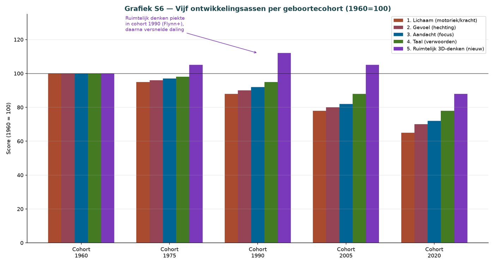
Beschreibung: Alle fünf Achsen sinken ab der Kohorte 1975, mit Ausnahme des räumlichen 3D-Denkens, das in der Kohorte 1990 seinen Höhepunkt erreicht (Flynn-Spitze). Ab der Kohorte 2005 beschleunigt sich der Rückgang auf allen Achsen. Die Kohorte 2020 liegt bei 65 bis 88 % des Niveaus von 1960.
Methode: Jede Achse wurde auf 100 in der Kohorte 1960 normiert. Werte für 1975/1990/2005/2020 je Achse aus Messquellen abgeleitet: KOMBO-Motorik (Achse 1), Familienbeständigkeitsindex (Achse 2), NEA-Fokus (Achse 3), PIRLS/PISA (Achse 4), 3D-Würfel + PISA Raum-Form (Achse 5).
Quelle: Zusammenstellung aus CBS, OECD PISA, Pietschnig 2015 (Flynn-3D-Würfel), Erasmus MC.
Übersichtsgrafik aller fünf Entwicklungsachsen nach Geburtskohorte, mit 1960 als Referenzpunkt (=100). Kohorten 1960/1975/1990/2005/2020 auf fünf Achsen. Das räumliche 3D-Denken erreichte in der Kohorte 1990 seinen Höhepunkt (Flynn-Spitze), danach beschleunigte sich der Rückgang auf allen Achsen. Die Kohorte 2020 liegt bei 65 bis 88 % des Niveaus von 1960. Die Kohorte 2020 tritt jetzt in VMBO/HAVO/VWO ein (Verfestigungsphase S3, 14–21 Jahre) und später in HBO/WO (S4, 21–35 Jahre). Dass alle fünf Achsen gleichzeitig unter dem Niveau von 1960 liegen, bedeutet, dass jede weiterführende Ausbildung mit weniger Grundfertigkeiten arbeiten muss. [Quelle: Positionspapier der Tweede Kamer zur PISA-Lesekompetenz (2024, 2024D10790), Pietschnig & Voracek, Metaanalyse des Flynn-Effekts (2015)]
A.3 Fünf Komponenten der Gefühlsblindheit
Beschreibung: Gefühlsblindheit ist die zusammenhängende Funktionsachse von der Tiefenwahrnehmung über das Tiefendenken bis zur Risikoeinschätzung. Der Verlust der Tiefenwahrnehmung ist ein SYMPTOM desselben Mechanismus, nicht das Problem selbst.
Methode: Fünf Komponenten (jeweils 20 % Gewicht in der Kompositbewertung): A Tiefenwahrnehmung (stereoskopischer Input), B Tiefenmotorik (KOMBO), C stereometrischer Kortex (Flynn-3D-Würfel), D stereometrisches Denken (PISA Raum-Form), E Gefahr-und-Grenze (Spielen im Freien, Konstruktionsspielzeug).
Quelle: Synthese dieses Berichts.
Definitionsdiagramm der Gefühlsblindheit als fünfte Achse mit fünf Komponenten (A bis E). Gefühlsblindheit = Unfähigkeit, Tiefe einzuschätzen und ein 3D-Bild im Gehirn zu bilden. Hauptursache: Das iPad auf 30 cm eliminiert den Tiefeninput während der Verfestigungsphase S1 (0–7 Jahre). Klassische Kurzsichtigkeit = Symptom, nicht das Problem. Komponente D (stereometrisches Denken) manifestiert sich in der Verfestigungsphase S3 (14–21 Jahre) als Mathematikunterricht; an der Universität (S4, 21–35 Jahre) als technisch-naturwissenschaftliche Ausbildung. Ohne S1+S2-Grundlage können S3 und S4 nicht ausgefüllt werden. [Quelle: TU Delft, „Die Bewältigung des Ingenieurmangels erfordert eine Talentstrategie“ (2026)]
Die fünf Komponenten:
A. Tiefenwahrnehmung — stereoskopischer Input von zwei Augen in unterschiedlichen Entfernungen – der physische Input, aus dem Gehirne 3D aufbauen
B. Tiefenmotorik — den Körper in 3D bewegen: werfen, fangen, springen, klettern
C. Stereometrischer Kortex — neuronale Infrastruktur für die 3D-Bildgebung: visueller Kortex, Parietalkortex, 3D-Navigation im Hippocampus, systemisches Denken im präfrontalen Kortex
D. Stereometrisches Denken — kognitive Anwendung der 3D-Fähigkeit: Geometrie, Stereometrie, Volumenintegrale, Tensoren, räumliches Schlussfolgern
E. Gefahr-und-Grenze — den eigenen 3D-Körper in der 3D-Welt spüren: körperliche Risikoeinschätzung, Materialverständnis, Gefühl für Folgen
Teil B — Vier klassische Erziehungsursachen
B.1 Kinderbetreuung — Hauptgrafik v10
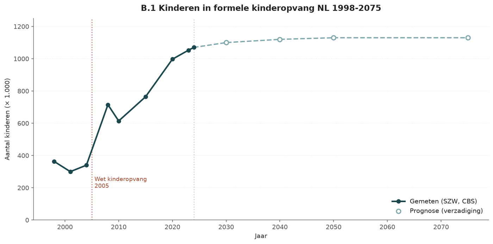
Beschreibung: Von 300.000 (2001) auf 1,07 Millionen Kinder (2024). Das Kinderbetreuungsgesetz von 2005 als Wendepunkt. Die Prognose sättigt sich bei rund 1,13 Mio. bei unveränderter Politik.
Methode: Gemessene Daten aus den SZW-Quartalsberichten 1998–2024. S-Kurven-Prognose mit Sättigung auf Grundlage des demografischen Maximums der Niederlande.
Quelle: SZW-Quartalsberichte zur Kinderbetreuung, CBS.
Basisreihe der Kinderbetreuung: grundlegender demografischer Wandel, der die Verfestigungsphase S1 (0–7 Jahre) betrifft. Von 300.000 (2001) auf 1,07 Millionen Kinder in formeller Betreuung (2024). Das Kinderbetreuungsgesetz von 2005 als Wendepunkt. Manifestation in S1: Kinder verbringen die wichtigste Verfestigungsphase in einer standardisierten 2D-Umgebung. Der Onderwijsraad empfiehlt VVE für Risikokinder von 0–7 Jahren, weist aber gleichzeitig auf ein Bindungsrisiko bei Nicht-Risikogruppen hin. [Quelle: Onderwijsraad, „Beratungsschreiben zu Einrichtungen für junge Kinder“ (2023)]
B.4 Erwerbsbeteiligung von Müttern
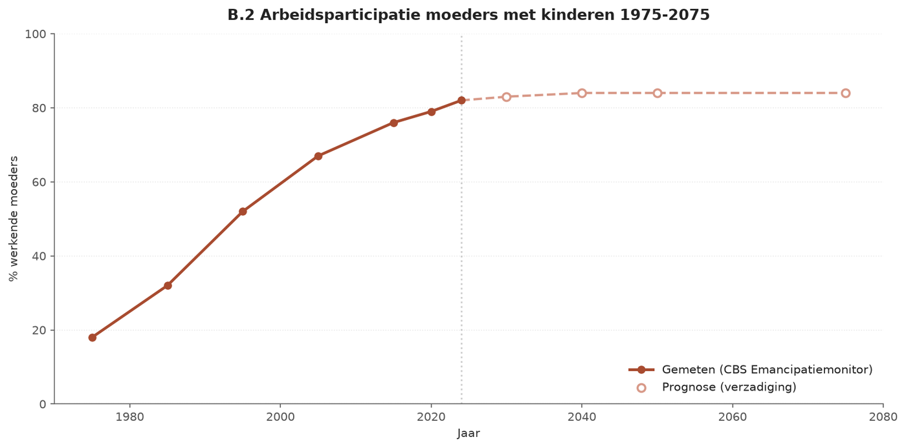
Beschreibung: Von 18 % (1975) auf 82 % (2024) – die grundlegende demografische Veränderung. Die Prognose sättigt sich bei rund 84 %.
Methode: CBS-Zahlen zu Müttern im Alter von 21–35 (S4) bis 35–77 (S5) Jahren mit mindestens einem minderjährigen Kind.
Quelle: CBS Emanzipationsmonitor.
Grundlegender Wandel der Erwerbsbeteiligung von Müttern 1975–2075. Von 18 % (1975) auf 82 % (2024). Verdopplung zwischen 1975 und 1995, Sättigung bei rund 84 %. Eine berufstätige Mutter bedeutet, dass S1 (0–7) größtenteils in der Kinderbetreuung stattfindet. Direkte Verbindung zu Bildungsleistungen in den OCW-Berichten nicht ausdrücklich belegt; modellhaft über Achse 2 (Gefühl) auf S4 (Berufsleben) durchwirkend. [Modellhafte Durchwirkung über Anlage 1]
B.6 Bildschirmzeit
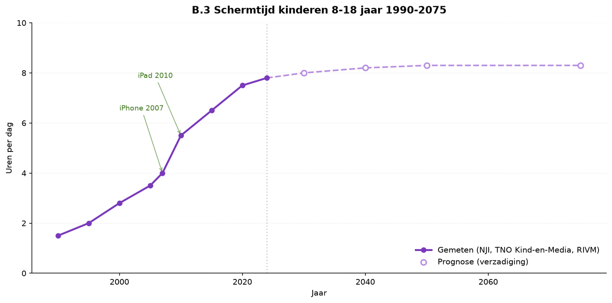
Beschreibung: Von 1,5 Std./Tag (1990) auf 7,8 Std./Tag (2024). iPhone 2007 und iPad 2010 als Wendepunkte. Die Prognose sättigt sich bei rund 8,3 Std./Tag.
Methode: Aggregation der NJI-Medienforschung, TNO Kind und Medien im Fünfjahresrhythmus, RIVM-Jugendmonitor.
Quelle: NJI, TNO Kind und Medien, RIVM.
Bildschirmzeit als zentrale Ursache im Einflussmodell: betrifft S1 (0–7) und S2 (7–14). Von 1,5 Std./Tag (1990) auf 7,8 Std./Tag (2024, Kohorte 7–21 Jahre). iPhone 2007 und iPad 2010 als Wendepunkte. Die Prognose sättigt sich bei rund 8,3 Std./Tag. Das iPad in 30 cm Entfernung während S1 blockiert das Training der Tiefenwahrnehmung (Komponente A der Gefühlsblindheit). AJN-Jugendärzte warnen explizit vor Kurzsichtigkeit und Konzentrationsproblemen. In S2 (7–14) verdrängt die Bildschirmzeit das Spiel und Erleben, durch die sich die 3D-Fähigkeit verstärken würde. [Quelle: AJN-Jugendärzte, „Factsheet Bildschirmnutzung aus der Nähe“ (2019), TNO, Pluymen et al., „Bildschirmnutzung“ (2024)]
B.8 Digitale Mediennutzung von Kleinkindern im Alter von 0–7 Jahren
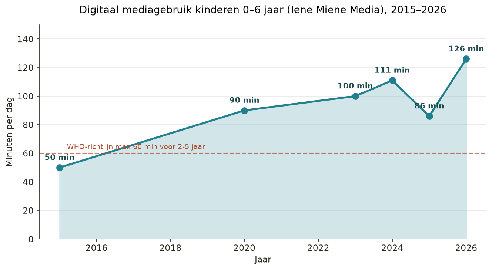
Beschreibung: Von 50 Min./Tag (2015) auf 126 Min./Tag (2026). Die WHO-Richtlinie von maximal 60 Minuten für 0–7-Jährige wird seit 2018 überschritten und steigt weiter.
Methode: Stichprobe von Eltern mit Kindern im Alter von 0–7 Jahren, aktuelle Messung des Vortags.
Quelle: Iene Miene Media-Forschung des Netzwerks Mediawijsheid NL, alle 2–3 Jahre.
Messung der jüngsten Altersgruppe 0–7 Jahre – entscheidend für Komponente A der Gefühlsblindheit und Aufmerksamkeit in S1. Von 50 Min./Tag (2015) auf 126 Min./Tag (2026). Die WHO-Richtlinie von maximal 60 Min. für 2–5-Jährige wird seit 2018 überschritten und steigt weiter. AJN-Jugendärzte: „Für Kinder bis 2 Jahre Bildschirme möglichst einschränken; bis 5 Jahre maximal 1 Stunde pro Tag.“ Die tatsächlichen 126 Min. liegen deutlich darüber. Diese Kohorten treten anschließend mit einer gestörten S1-Grundlage in S2 ein. [Quelle: AJN Jugendärzte, „Factsheet Bildschirmnutzung aus der Nähe“ (2019)]
B.9 Lehrermangel
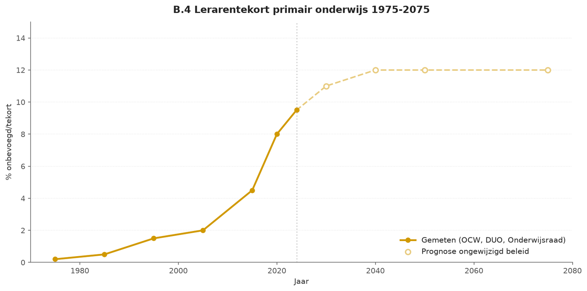
Beschreibung: Von 0,2 % (1975) auf 9,5 % (2024) unqualifiziert oder unbesetzt. Die Prognose stabilisiert sich bei rund 12 % bei unveränderter Politik.
Methode: OCW-Registrierung der Qualifikation + DUO-Stellenmonitor + Schätzung des Onderwijsraad.
Quelle: OCW, DUO, Onderwijsraad.
Lehrermangel in der Grundschule 1975–2075: betrifft vor allem die Verfestigungsphase S2 (7–14), in der Sprache und Spiel gefestigt werden sollten. Von 0,2 % Unqualifizierten/Mangel (1975) auf 9,5 % (2024). Die Prognose stabilisiert sich bei rund 12 %. Onderwijsraad („Schaarste schuurt“ 2023): „Bei Schulen mit einem Mangel von über 10 % ist der Anteil der Unzureichenden am höchsten.“ Direkter Zusammenhang zwischen Mangel und Lernergebnissen in der S2-Phase. [Quelle: Onderwijsraad, „Schaarste schuurt“ (2023), Onderwijsinspectie, Technischer Bericht zum Lehrermangel (2024)]
B.11 Überblick über die vier Ursachen zusammen (v10)
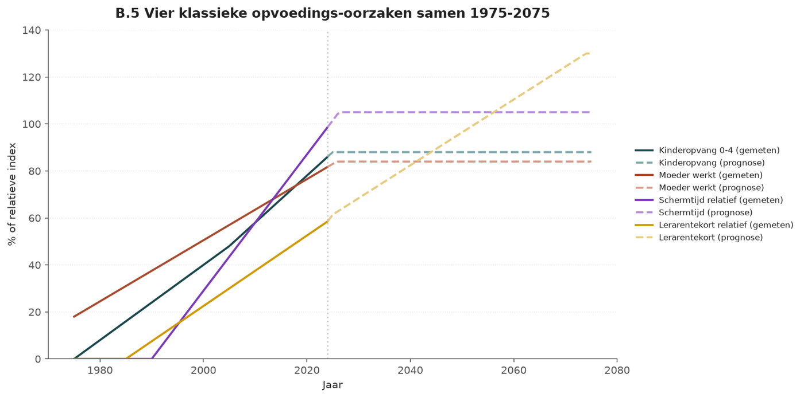
Beschreibung: Vier Ursachen auf einer Achse mit gemessenen Daten (durchgezogene Linie) und Prognose (gestrichelt). Alle vier steigen: Kinderbetreuung, Mütterberufstätigkeit, Bildschirmzeit und Lehrermangel.
Quelle: Zusammenführung der oben genannten Quellen.
Übersichtsgrafik: Vier klassische Ursachen auf einer Achse zeigen die Gleichzeitigkeit von Veränderungen, die S1 und S2 betreffen. Vier Ursachen 1975–2075. Messungen bis 2024, Prognose danach. Alle vier Ursachen wirken zusammen auf die Verfestigungsphasen S1 (0–7) und S2 (7–14), wodurch ein kumulativer Effekt auf Kohorten entsteht, die sich jetzt in S3–S5 befinden. [Modellhafte Durchwirkung über Anlage 1]
B.13 Integrale Erziehungsursachen (erweitert)
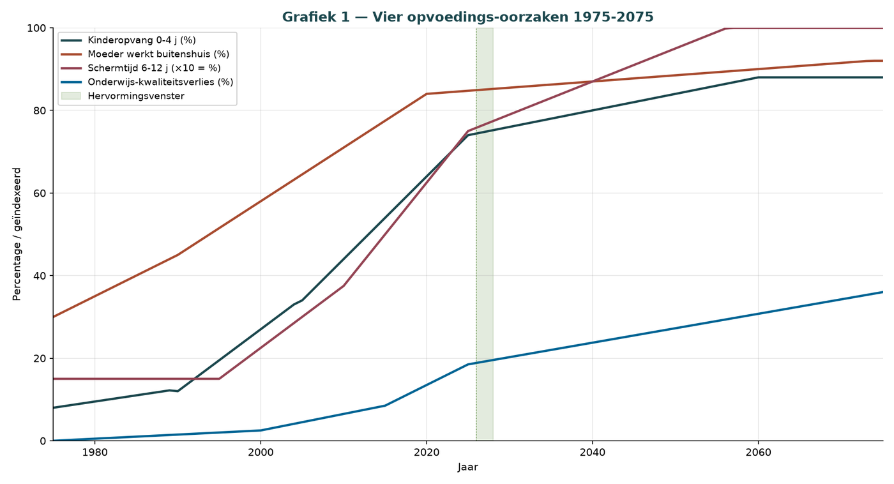
Beschreibung: Dieselben vier Ursachen, jedoch mit Szenariolinien für integrierte Erziehungskette und Niederländische Renaissance eingezeichnet als Gegenszenarien.
Methode: Szenariomodellierung: Reduzierung des Kinderbetreuungsanteils auf 15 % und der Bildschirmzeit auf 3 Std./Tag als Ziel für die integrierte Erziehungskette.
Quelle: Modellierung von CBS/OCW/NJI mit Szenario-Overlay.
Vier Erziehungsursachen mit Szenariolinien (integrierte Erziehungskette, Niederländische Renaissance) als Gegenszenarien. Veränderbarkeit durch politische Intervention: Kinderbetreuung auf 15 % (schützt S1), Bildschirmzeit auf 3 Std./Tag (schützt S1+S2). Interventionen, die auf S1 und S2 zielen, wirken verzögert in S3–S5, nach 14–35 Jahren. [Modellhafte Durchwirkung über Anlage 1]
Teil C — Gemessene Ausarbeitungen
C.1 PISA-Lesekompetenz — Hauptgrafik v10
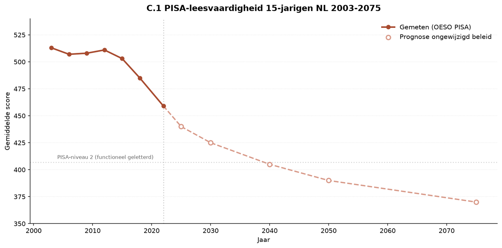
Beschreibung: Von 513 (2003) auf 459 (2022) — ein Rückgang um 54 Punkte in 19 Jahren. Weltweit einer der stärksten Rückgänge. Die Prognose sinkt um 2040 unter PISA-Niveau 2.
Methode: PISA-Messzyklen: 2003, 2006, 2009, 2012, 2015, 2018, 2022. Lineare Extrapolation mit Sättigung bei 370 um 2075.
Quelle: OECD PISA. Der PISA-Zyklus 2025 ist noch nicht veröffentlicht (erwartet im Dezember 2026).
Zentrale PISA-Grafik: Lesekompetenz 14-Jähriger in NL. Misst das Ergebnis der Verfestigungsphase S2 (7–14). Von 513 (2003) auf 459 (2022), Rückgang um 54 Punkte in 19 Jahren. Die Prognose sinkt um 2040 unter PISA-Niveau 2 (funktionale Lese- und Schreibkompetenz). Das Positionspapier der Tweede Kamer (2024) bezeichnet den Rückgang als „außergewöhnlich schnell“. PISA 2025 (Juli 2026) zeigt einen weiteren Rückgang. Diese Kohorten gehen in S3 (14–21, VO-Abschlussprüfung) und S4 (21–35, Hochschulbildung) über. Direkte Auswirkung: höhere Abbruchquoten im HBO/WO im ersten Studienjahr aufgrund unzureichender Sprachkompetenz. [Quelle: Positionspapier der Tweede Kamer zur PISA-Lesekompetenz (2024, 2024D10790), Expertisenetzwerk Beta-Bildung, „Ergebnisse PISA 2025“ (Juli 2026)]
C.2 PISA-Lesetrend (lang)
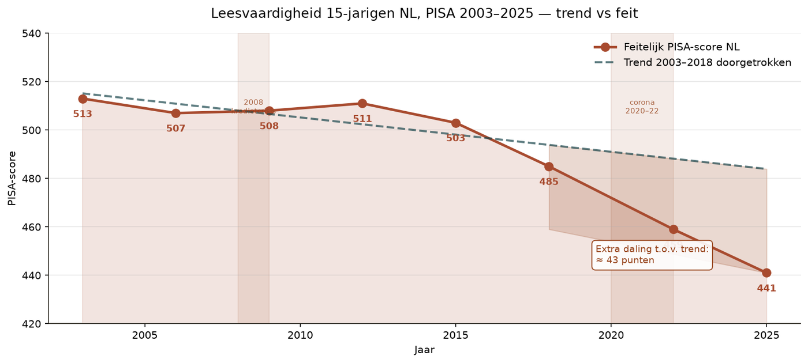
Beschreibung: Der Rückgang in NL im Vergleich zum OECD-Durchschnitt und zu Finnland. Auch Finnland verzeichnet einen Rückgang, jedoch weniger stark.
Methode: Vergleich des PISA-Ergebnisses über dieselben Messzyklen.
Quelle: OECD PISA.
Internationaler Vergleich der PISA-Leseleistungen: NL fällt schneller als Finnland und der OECD-Durchschnitt. NL sinkt zwischen 2015 und 2022 vom überdurchschnittlichen Bereich unter den Durchschnitt. OECD PISA 2022 Country Note NL: „Die durchschnittliche Leistung war 2022 niedriger als in jeder früheren Erhebung.“ [Quelle: OECD, PISA 2022 Country Note Netherlands]
C.4 PISA-Mathematik
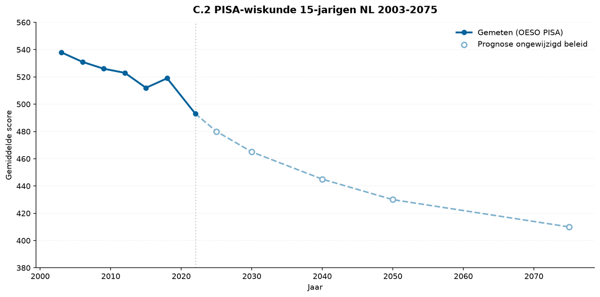
Beschreibung: Von 538 (2003) auf 493 (2022). Entscheidend für die MINT-Bildung und die industrielle Anbindung.
Quelle: OECD PISA.
PISA-Mathematik 14-Jähriger in NL: entscheidend für die MINT-Bildung. Von 538 (2003) auf 493 (2022), Rückgang um 45 Punkte. TU Delft (2026): „Die Zahl niederländischer Studierender, die eine technische Ausbildung wählen, sinkt erneut.“ Mathematikkompetenz aus S2/S3 bestimmt den MINT-Zustrom in S4. [Quelle: TU Delft, „Die Lösung des Ingenieurmangels erfordert eine Talentstrategie“ (2026)]
C.5 PISA Raum und Form
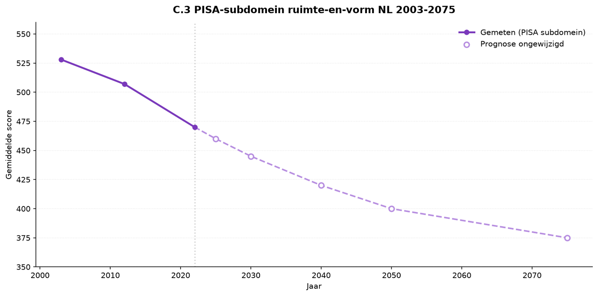
Beschreibung: Von 528 (2003) auf 470 (2022) — ein Rückgang um 58 Punkte. Stärkster Indikator für die kognitive Komponente D der Gefühlsblindheit.
Methode: PISA berichtet Subdomänenwerte für jeden Messzyklus.
Quelle: OECD-PISA-Subdomänenwerte.
PISA-Subdomäne Raum und Form: stärkster direkter Indikator der Gefühlsblindheit-Komponente D (stereometrisches Denken) in der Verfestigungsphase S2/S3. Von 528 (2003) auf 470 (2022), Rückgang um 58 Punkte — stärker als der Rückgang der Gesamtleistung in Mathematik. Dieser Rückgang betrifft in S4 (21–35) MINT-Studiengänge, die stereometrisches Denken erfordern: Bauingenieurwesen, Maschinenbau, Architektur, Physik. [Quelle: OECD-PISA-Subdomänenwerte]
C.6 PISA Raum und Form (Stereo-Version)
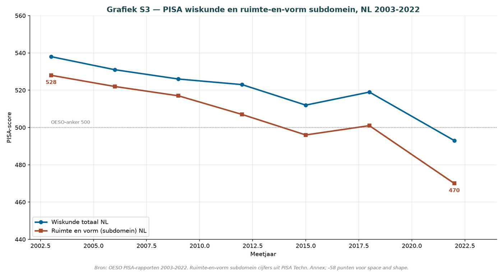
Beschreibung: Alternative Visualisierung mit Vergleich von OECD-Ländern.
Quelle: OECD-PISA-Subdomänen.
Alternative Visualisierung von PISA Raum und Form mit OECD-Vergleich. NL im Vergleich zu OECD-Ländern in der Subdomäne. Dieselbe Auswirkung auf die Bildung wie in C.5. [Quelle: OECD PISA]
C.7 PISA-Werte in mehreren Domänen
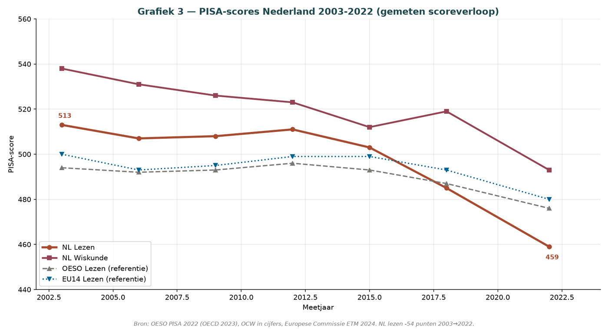
Beschreibung: Alle drei Domänen auf einer Achse: Alle drei sinken nach 2015 stark. Die Naturwissenschaften sinken am wenigsten.
Quelle: OECD PISA.
Multi-Domänen-PISA-Ansicht: Lesen, Mathematik und Naturwissenschaften zusammen. Alle drei sinken nach 2015 stark. Die Naturwissenschaften sinken am wenigsten. Kumulative Auswirkung auf alle weiterführenden Ausbildungen. [Quelle: Positionspapier der Tweede Kamer zur PISA-Lesekompetenz (2024, 2024D10790)]
C.8 Unter PISA-Niveau 2
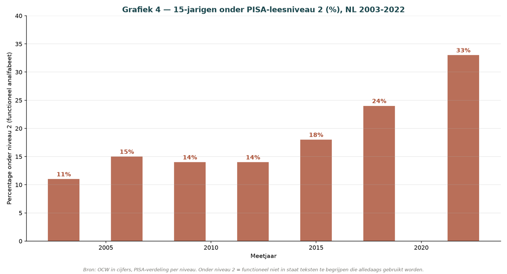
Beschreibung: Entscheidend: Der Anteil funktionaler Analphabeten unter den 14-Jährigen steigt von 12 % (2003) auf 33 % (2022). Einer von drei Schülern kann Texte nicht funktional nutzen.
Methode: PISA-Niveau 2 ist die OECD-Schwelle für funktionale Lesekompetenz.
Quelle: OCW in Zahlen, OECD PISA.
Prozentsatz funktionaler Analphabeten unter den 14-Jährigen: der direkteste Indikator für das gesellschaftliche Risiko. Von 12 % (2003) auf 33 % (2022). Einer von drei 14-Jährigen kann Texte nicht funktional nutzen. Diese Schüler verlassen VMBO und HAVO als funktionale Geringalphabetisierte; MBOs berichten, dass bei der Aufnahme mehr Lesetests erforderlich sind. Direkte Auswirkung auf S3 und S4. [Quelle: Positionspapier der Tweede Kamer zur PISA-Lesekompetenz (2024, 2024D10790)]
C.9 PIRLS-Kohorte 7–14 — Hauptgrafik v10
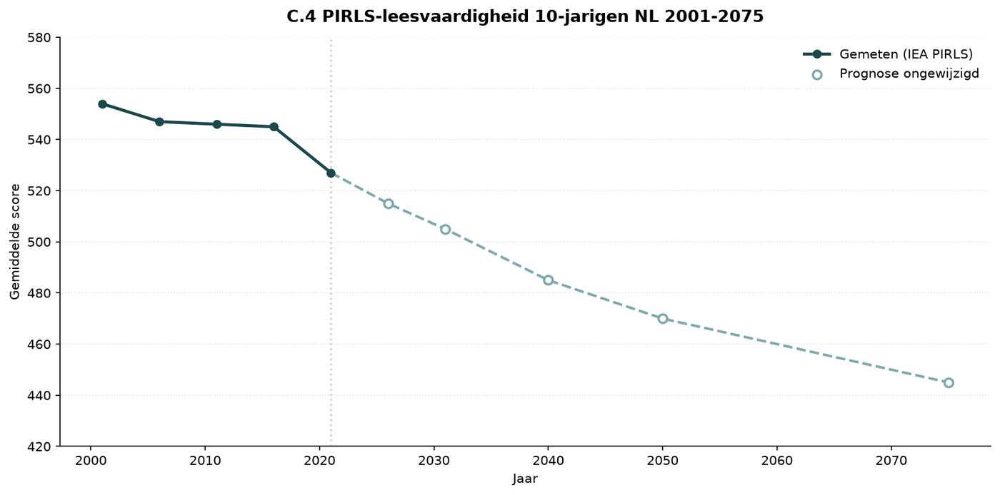
Beschreibung: Von 554 (2001) auf 527 (2021). PIRLS testet die 7–14-Kohorte und zeigt daher die Kohorte, die etwa 2011 die Grundschule besuchte.
Quelle: IEA PIRLS 2001, 2006, 2011, 2016, 2021.
PIRLS-7–14-Kohorte in NL: früheres Signal als PISA. Zeigt, dass der Leserückgang bereits in der Verfestigungsphase S2 (7–14) beginnt. Von 554 (2001) auf 527 (2021). Der Rückgang bei PIRLS 7–14 sagt den PISA-14-Rückgang 4–7 Jahre später voraus. Die Grundbildung (S2) muss die Lesekompetenz wiederherstellen, bevor der Übergang in die weiterführende Schule stabilisiert wird. [Quelle: IEA PIRLS, Onderwijsraad, „Schaarste schuurt“ (2023)]
C.10 PIRLS-Langversion
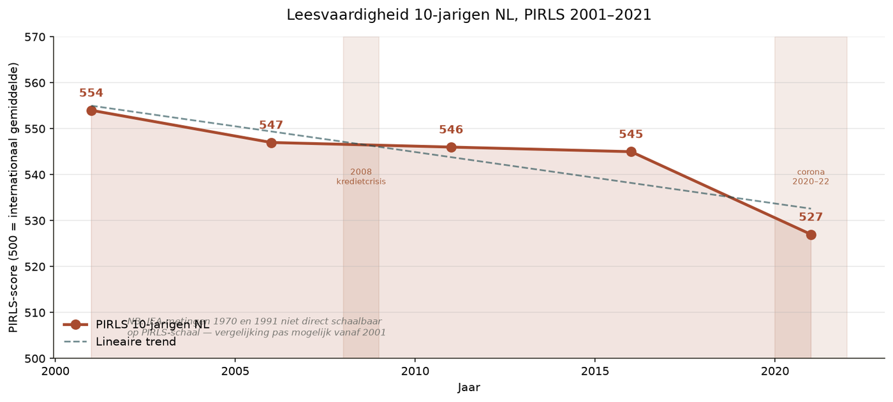
Beschreibung: NL fiel im internationalen Ranking beim Lesen von Platz 3 (2001) auf Platz 25 (2021).
Quelle: IEA PIRLS.
Internationales Ranking des PIRLS-Lesens: NL fiel von den Top 3 (2001) auf Platz 25 (2021). Internationaler Positionsverlust. Entspricht C.9. [Quelle: IEA PIRLS]
C.12 Burn-out — Hauptgrafik v10
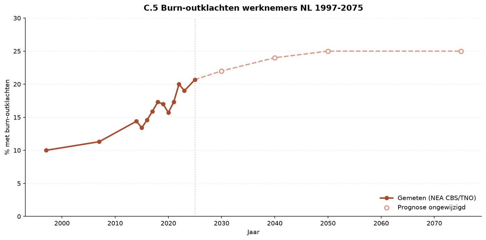
Beschreibung: Von 10 % (1997) auf 20,7 % (2025). Verdopplung in 28 Jahren. Die Prognose stabilisiert sich bei unveränderter Politik bei etwa 25 %.
Methode: Jährliche NEA-Erhebung, standardisierte Fragen zu Erschöpfung und Zynismus nach der Utrecht Burnout Scale.
Quelle: Nationale Erhebung zu Arbeitsbedingungen (NEA, CBS/TNO).
Burn-out bei Erwerbstätigen als Auswirkung in der Verfestigungsphase S4 (21–35) von vier Erziehungsursachen, die S1 und S2 betroffen haben. Von 10 % (1997) auf 20,7 % (2025). Verdopplung in 28 Jahren. Direkte indirekte Auswirkung auf die Bildung: Burn-out unter Lehrkräften trägt selbst zum Lehrermangel (B.9) bei, der wiederum S2 in einem Teufelskreis beeinträchtigt. [Quelle: Onderwijsraad, „Schaarste schuurt“ (2023)]
C.14 Burn-out nach Altersgruppe
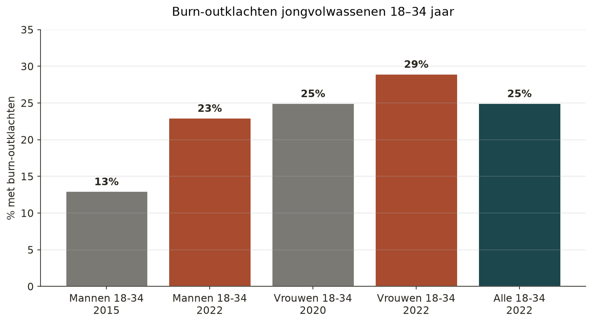
Beschreibung: Junge Menschen (18–34) weisen einen SCHNELLEREN Anstieg auf: von 8 % (2003) auf 25 % (2024). Ältere steigen weniger stark.
Methode: Aufschlüsselung der NEA nach Alterskategorien.
Quelle: NEA CBS/TNO.
Burn-out nach Alter: Junge Erwachsene zwischen 14 und 35 zeigen einen SCHNELLEREN Anstieg. Entscheidend für die Analyse der Kohortenverzögerung. Von 8 % (2003, junge Menschen) auf 25 % (2024, junge Menschen). Ältere steigen weniger stark. Abgänger von HBO/WO berichten innerhalb von fünf Jahren über Burn-out. Universitäten melden eine Zunahme von Studierenden mit psychischen Beschwerden. Direkte Auswirkung auf den Ausstieg aus der S4-Laufbahn. [Quelle: NEA, Universiteit Utrecht, „Einfluss von KI auf das Lernen von Studierenden“ (2024)]
C.16 WIA junge Menschen — v10
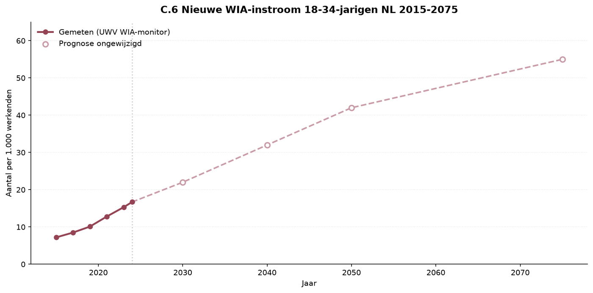
Beschreibung: Von 7,2 je 1.000 (2015) auf 16,7 je 1.000 (2024). Verdopplung in 9 Jahren. Prognose: 55 je 1.000 im Jahr 2075 ohne Eingriff.
Quelle: UWV-WIA-Monitor.
WIA-Zugänge junger Erwachsener im Alter von 14–35 Jahren: stärkster Anstieg aller Auswirkungen. Von 7,2 (2015) auf 16,7 (2024) je 1.000. Mehr als eine Verdopplung in 9 Jahren. WIA-Jugendliche sind häufig Aussteiger aus einer weiterführenden Ausbildung. Direkte Auswirkung auf S3 (Abbruch der weiterführenden Schule) und S4 (HBO/WO-Abbruch, früher Ausstieg aus dem Berufsleben). [Qualitative Einschätzung – nicht direkt dokumentiert]
C.18 Bei den Eltern lebende junge Erwachsene — v10
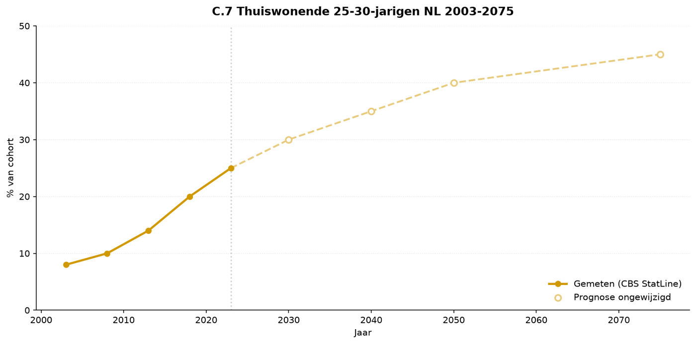
Beschreibung: Von 8 % (2003) auf 25 % (2023) — Verdreifachung. Spiegelt die Kombination aus finanzieller Abhängigkeit, Wohnungsnot und misslungener Individuation wider.
Quelle: CBS StatLine.
Bei den Eltern lebende Erwachsene im Alter von 21–35 Jahren: Indikator für verzögerte Individuation in der S4-Phase. Von 8 % (2003) auf 25 % (2023). Verdreifachung. Die Verzögerung der S4-Individuation hängt mit einer gestörten S1-Bindung zusammen. Direkte Auswirkung auf den Übergang in HBO/WO und die Entwicklung einer frühen beruflichen Laufbahn. [Qualitative Einschätzung – nicht direkt dokumentiert]
C.20 Überblick über vier Auswirkungen — v10
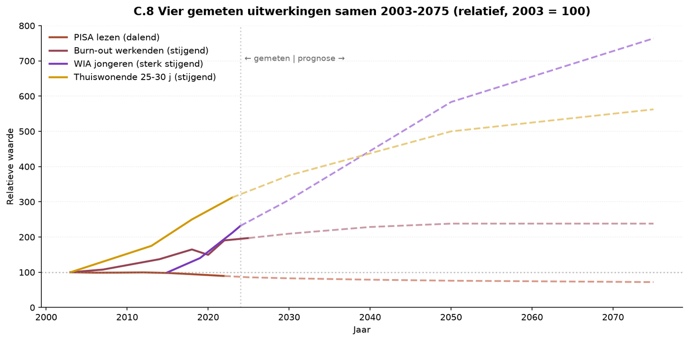
Beschreibung: Alle vier Auswirkungen auf einer Achse (100 = 2003). WIA junge Menschen steigt am stärksten, PISA sinkt am stärksten.
Quelle: Zusammenführung der obigen Daten.
Überblick über vier relative Auswirkungen auf einer Achse (2003=100). WIA junge Menschen steigt am stärksten, PISA sinkt am stärksten. Alle vier Auswirkungen zeigen sich in S3 und S4, haben ihre Ursachen jedoch in S1 und S2. [Modellbasierte Weiterleitung über Anlage 1]
D.1 Gefühlsblindheit als Funktion
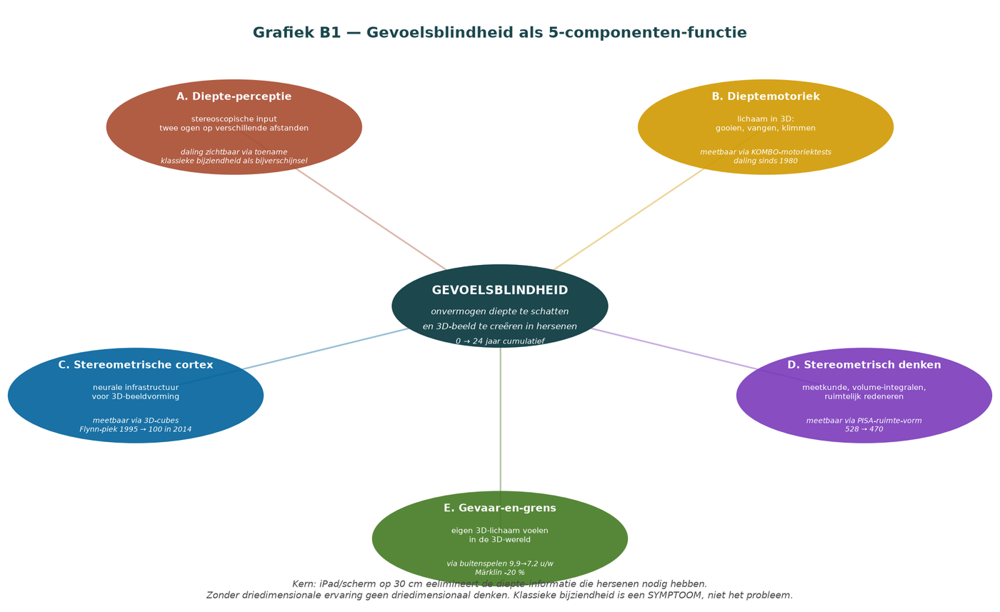
Beschreibung: Verlust der Tiefenwahrnehmung ist ein SYMPTOM; Gefühlsblindheit umfasst die gesamte Funktion von der Tiefenwahrnehmung über das Tiefendenken bis zur Risikoeinschätzung.
Methode: Konzeptuelles Schema.
Quelle: Konzeptuelles Modell dieses Berichts.
Definitionsdiagramm der Gefühlsblindheit als zusammenhängende Funktion: Unfähigkeit, Tiefe einzuschätzen und ein 3D-Bild zu bilden. Ein iPad in 30 cm Entfernung eliminiert den Tiefeninput während S1 (0–7) und S2 (7–14). Klassische Kurzsichtigkeit ist ein Symptom, nicht das Problem. Komponente D (stereometrisches Denken) betrifft direkt den Mathematikunterricht in S2/S3; Komponente C (stereometrischer Kortex) betrifft Physik und Bauwesen in S3/S4. [Quelle: TU Delft, „Die Lösung des Ingenieurmangels erfordert eine Talentstrategie“ (2026)]
D.3 Fünf Komponenten (aktuelle Version)
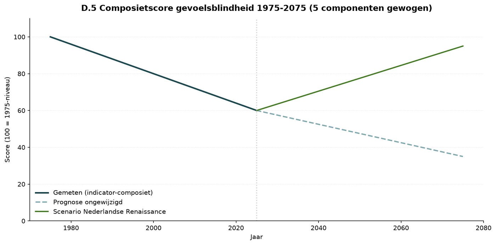
Beschreibung: Von 100 (1975) auf 60 (2025). Bei unveränderter Politik: 35 im Jahr 2075. Niederländische Renaissance: Erholung auf 95 im Jahr 2075.
Methode: Gewichteter Durchschnitt von 5 Komponenten (je 20 %).
Quelle: Modell dieses Berichts.
Kompositwert der Gefühlsblindheit für 1975–2075: quantifiziert das 3D-Vermögen als eine Zahl pro Jahr. Von 100 (1975) auf 60 (2025). Ohne Maßnahmen: 35 im Jahr 2075. Niederländische Renaissance: Erholung auf 95. Der Wert setzt sich aus den Komponenten A bis E zusammen (je 20 %). Der Wertverlust zeigt sich in S3–S4 als Rückgang des MINT-Zustroms und Zunahme der Wiederholungen. [Modellbasierte Weiterleitung über Anlage 1]
D.4 Verlust der Tiefenwahrnehmung nach Kohorte (Indikator für den Verlust der Tiefenwahrnehmung)
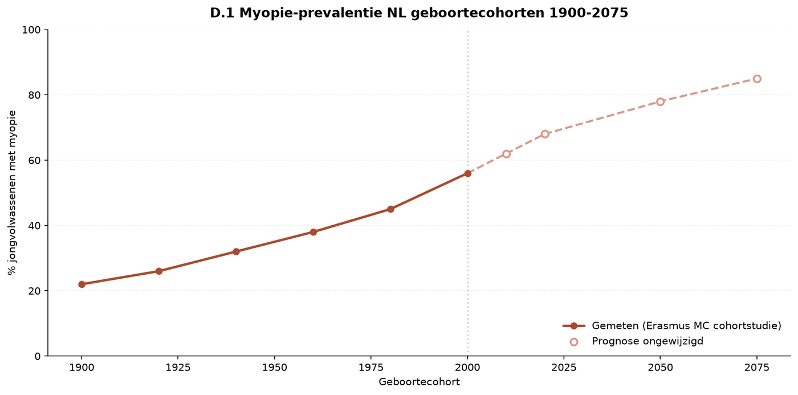
Beschreibung: Von 22 % (Kohorte 1900) auf 56 % (Kohorte 2000). Der Verlust der Tiefenwahrnehmung steigt nicht, weil die Augen schwächer werden, sondern weil Kinder nicht mehr auf wechselnde Entfernungen schauen. Die iPad-Generation befindet sich dauerhaft bei 30 cm. Ohne Eingriff 85 % in der Kohorte 2075.
Methode: Erasmus MC verfolgt Kohorten longitudinal durch Augenuntersuchungen im Alter von 14–21 (S3) bis 21–35 (S4).
Quelle: Erasmus-MC-Kohortenstudie (BMJ 2025).
Klassische Kurzsichtigkeit als Indikator für den Verlust der Tiefenwahrnehmung (Komponente A). Longitudinale Erasmus-MC-Kohortenstudie. Von 22 % (Kohorte Geburtsjahr 1900) auf 56 % (Kohorte 2000). Prognose ohne Eingriff: 85 % in der Kohorte 2075. Der Anstieg ist nicht auf schwächere Augen zurückzuführen, sondern darauf, dass während S1+S2 ständig aus 30 cm Entfernung geschaut wird. AJN Jeugdartsen warnen: Beratungsstellen, Augen- und Jugendärzte beobachten aufgrund der Bildschirmnutzung aus kurzer Entfernung eine Zunahme der Kurzsichtigkeit. [Quelle: Erasmus MC, Kohortenstudie zur klassischen Kurzsichtigkeit (BMJ 2025), AJN Jeugdartsen, „Factsheet beeldschermgebruik van dichtbij“ (2019)]
D.6 Flynn-3D-Würfel
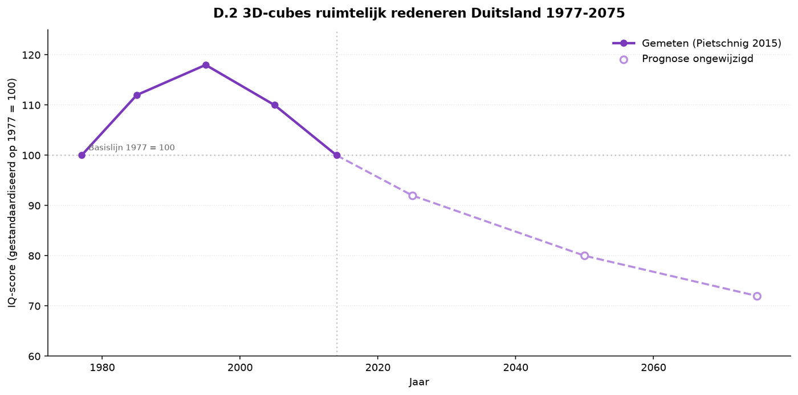
Beschreibung: Höchststand von 118 im Jahr 1995, zurück auf 100 im Jahr 2014 — die sogenannte Flynn-Umkehr. Nur das räumliche Denken weist diese Umkehr auf, der verbale IQ steigt weiter.
Methode: Longitudinale Untersuchung auf Grundlage von Tests bei militärischen Musterungen in DE.
Quelle: Pietschnig & Voracek 2015 (deutsche Wehrpflichtige).
Flynn-3D-Würfel beim räumlichen Denken: Höchststand in der Kohorte 1995 (S2 vor der iPad-Zeit durchlaufen), danach Rückgang. Sogenannte Flynn-Umkehr. Höchststand 118 im Jahr 1995, zurück auf 100 im Jahr 2014. Nur der räumliche Teil zeigt diese Umkehr; der verbale IQ steigt weiter. Pietschnig & Voracek 2015 (deutsche Wehrpflichtige). Direkte Auswirkung auf MINT-Studiengänge in S4: weniger Studierende mit einer starken Basis im räumlichen Denken ab der Kohorte 2000. [Quelle: Pietschnig & Voracek, Metaanalyse des Flynn-Effekts (2015)]
D.8 Spielen im Freien
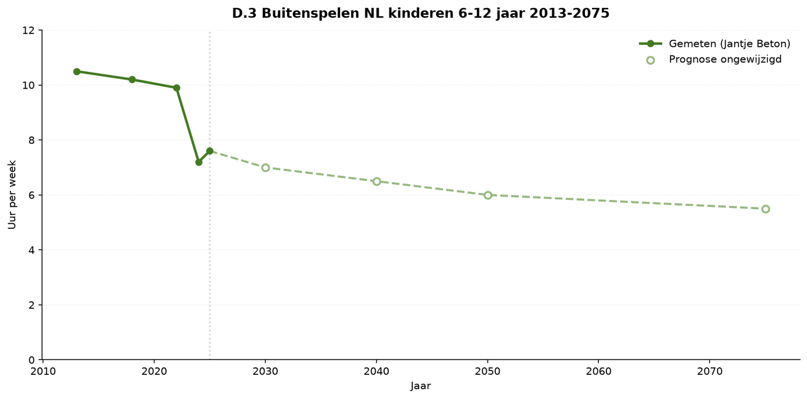
Beschreibung: Von 10,5 Stunden/Woche (2013) auf 7,2 Stunden/Woche (2024). 416.000 Kinder in NL spielen NIE oder fast nie draußen (Jantje Beton 2024, 2022 waren es 260.000).
Methode: Stichprobe von Jantje Beton unter 6–12-jährigen Kindern in NL.
Quelle: Jantje-Beton-Untersuchung zum Spielen im Freien 2022/2024/2025.
Spielen im Freien in NL, 7–14-Kohorte: einzige harte Zeitreihe für die S2-Komponente E. Von 10,5 Stunden/Woche (2013) auf 7,2 Stunden/Woche (2024). 416.000 Kinder in NL spielen NIE oder fast nie draußen (Jantje Beton 2024, 2022 waren es 260.000). Jantje Beton: „80 % der Kinder bewegen sich zu wenig. Freies Spielen im Freien ist für eine gesunde Entwicklung unerlässlich.“ Betrifft Komponente B (Tiefenmotorik) und E (Gefahr und Grenze) direkt in S2. [Quelle: Jantje Beton, Untersuchung zum Spielen im Freien (2022/2024/2025)]
D.9 Rückgang körperlicher Aktivitäten
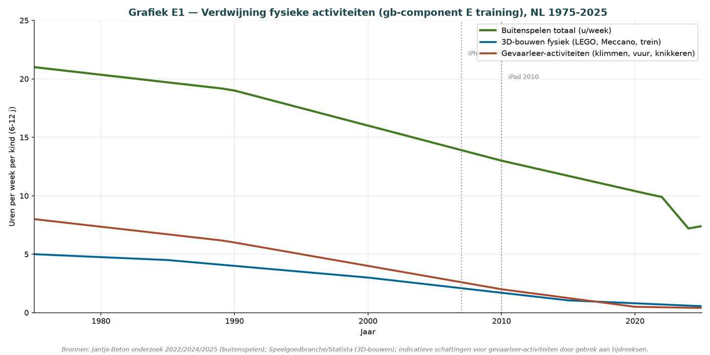
Beschreibung: Alle Risikoaktivitäten (Klettern, Feuer, Bordsteinkanten, Murmeln, 3D-Bauen) gehen zurück. Komponente E der Gefühlsblindheit.
Methode: Aggregation messbarer Indikatoren + indikative Schätzungen für Aktivitäten, für die keine Zeitreihe vorliegt.
Quelle: Jantje Beton + indikative Schätzungen der Spielwarenbranche.
Körperliche Aktivitäten (Klettern, Feuer, Murmeln, Bordsteinkanten, 3D-Bauen): Komponente E in S2. Alle Risikoaktivitäten gehen zurück. Die Daten sind teilweise indikative Schätzungen der Spielwarenbranche. Die MBO-Praxisbildung meldet bei Kindern aus S3 beim Schuleintritt eine verringerte Motorik und Risikoeinschätzung. [Qualitative Einschätzung – nicht direkt dokumentiert]
D.10 Modelleisenbahn-Umsatz
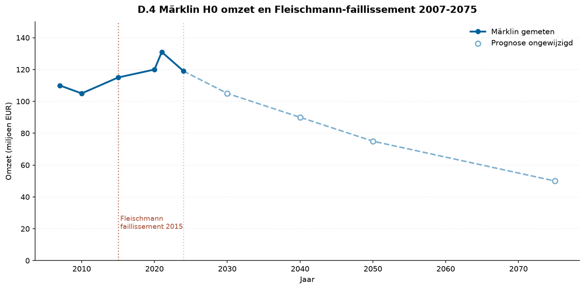
Beschreibung: Indikator für 3D-Bauspielzeug. Fleischmann 2015 insolvent (340 → 33 Mitarbeiter). Märklin 119,2 Mio. € (2024/2025), Prognose 120,5 Mio. € (2025/2026) — Stabilisierung nach vorherigem Rückgang.
Methode: Jahresabschlüsse + Branchenberichte.
Quelle: Handelsblatt, Wikipedia, Spielwarenmesse.
Märklin/Fleischmann-Umsatz: Proxy für 3D-Bauspielzeug, das die S2-Komponente E trainiert. Fleischmann 2015 insolvent (340 → 33 Mitarbeiter). Märklin 119,2 Mio. € (2024/2025), Prognose 120,5 Mio. € (2025/2026) — Stabilisierung nach vorherigem Rückgang. Proxy-Indikator für das Verschwinden des 3D-Bauspielens; keine direkte Verbindung zu Ausbildungsleistungen verfügbar. [Qualitative Einschätzung – nicht direkt dokumentiert]
D.12 Einfluss-Heatmap der Gefühlsblindheit
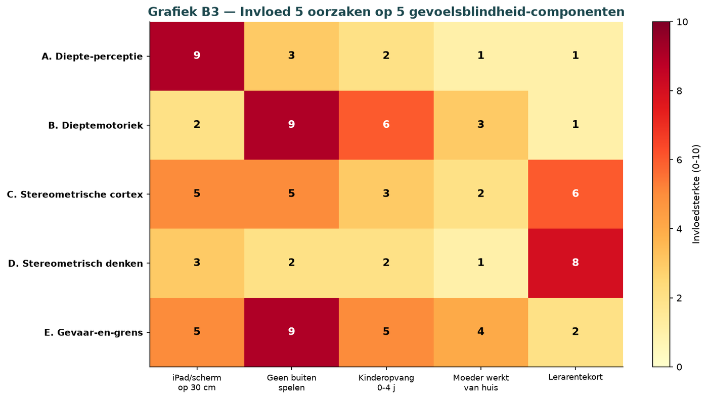
Beschreibung: Zeigt, welche Ursache welche Komponente am stärksten betrifft. Bildschirmzeit dominiert die Komponenten C und D. Kein Spielen im Freien betrifft A, B und E.
Methode: Expertenurteil auf einer Skala von 0–10 pro Ursache-Komponente-Paar.
Quelle: Modell dieses Berichts.
Heatmap 5 Ursachen × 5 Gefühlsblindheit-Komponenten: Kern des Einflussmodells. Das iPad in 30 cm Entfernung dominiert Komponente A (9/10) und E (5/10). Kein Spielen im Freien dominiert B (9/10) und E (9/10). Weiterleitung auf die Bildung in S3–S4 über die Komponenten C und D, die Mathematik und Physik betreffen. [Modellbasierte Weiterleitung über Anlage 1]
D.13 Weiterleitung der Gefühlsblindheit
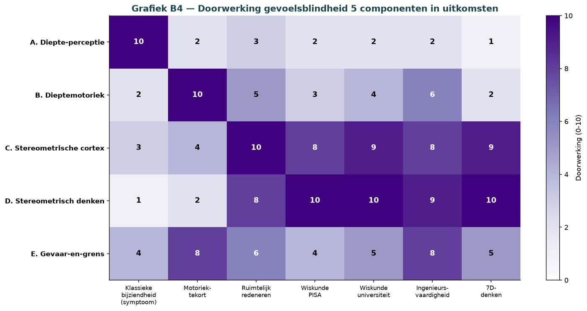
Beschreibung: Von 5 Komponenten über den Mathematikbildungsweg zum Ingenieurmangel und zur Talentabwanderung.
Quelle: Modell dieses Berichts.
Weiterleitung der Gefühlsblindheit zu Ergebnissen: von 5 Komponenten zum Ingenieurmangel und zur Talentabwanderung. Sichtbare Weiterleitungskette. TU Delft (2026): Der Ingenieurmangel steht in unmittelbarem Zusammenhang mit dem Rückgang des Zustroms niederländischer Studierender in technische Studiengänge der S4. [Quelle: TU Delft, „Die Lösung des Ingenieurmangels erfordert eine Talentstrategie“ (2026)]
D.14 Sankey der vollständigen Weiterleitungskette
[Fehlt: B5_sankey.png]
D.15 Pyramide der Kompetenzniveaus
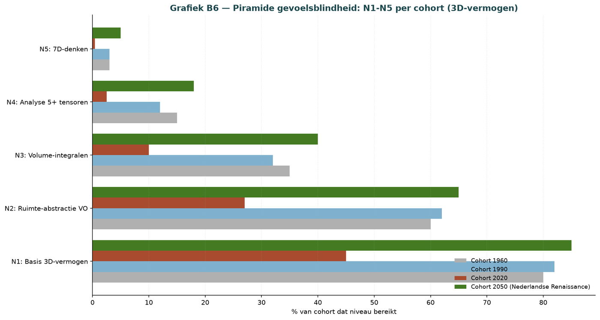
Beschreibung: Von der Basis (N1) bis zum 7D-Denken (N5). Kohorte 2020 nur 45 % auf N1, gegenüber 82 % im Jahr 1990.
Quelle: Modell dieses Berichts.
Pyramide N1–N5 der Gefühlsblindheit nach Kohorte. Kohorte 2020 nur 45 % auf N1 (1990 waren es 82 %). Vom Basisniveau bis zum 7D-Denken (Kosaris-Rahmen). N1 entsteht in S1 (0–7) und festigt sich in S2 (7–14). N3 kommt in S3 (14–21, VWO-Mathematik B). N4 in S4 (21–35, Universität). N5 in S5 (35–77). [Modellbasierte Weiterleitung über Anlage 1]
D.16 Gefühlsblindheit nach Szenario
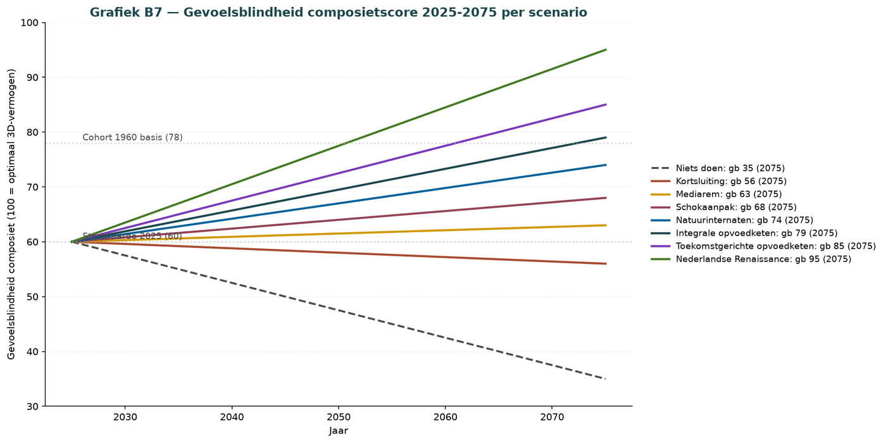
Beschreibung: Vergleich der Szenarien (alte Namen K, M, N, O = neue Namen Kurzschluss, Integrierte Erziehungskette, Zukunftsorientierte Erziehungskette, Niederländische Renaissance).
Quelle: Modell dieses Berichts.
Vergleich der Szenarien anhand des Kompositwerts der Gefühlsblindheit. Die Niederländische Renaissance steigt auf 95, Nichtstun sinkt auf 35. Die Szenarioergebnisse zu Bildungsleistungen in S3–S5 ergeben sich aus Anlage 1. [Modellbasierte Weiterleitung über Anlage 1]
D.17 Kostenpositionen durch schlechte Gefühlsblindheit
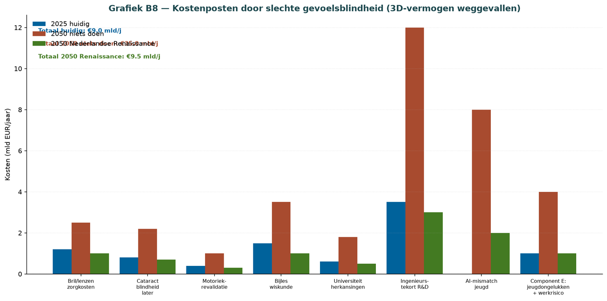
Beschreibung: Brillen/Gesundheitsversorgung, Motorik-Rehabilitation, Mathematiknachhilfe, Ingenieurmangel, KI-Mismatch, Jugendunfälle. Gesamtsumme 2050 ohne Eingriff: 35 Mrd. € pro Jahr.
Quelle: Rathenau, TNO, 4TU, PwC + Modellannahme Komponente E.
Kostenpositionen durch schlechte Gefühlsblindheit: Brillen/Gesundheitsversorgung, Motorik-Rehabilitation, Mathematiknachhilfe, Ingenieurmangel, KI-Mismatch. Gesamtsumme 2050 ohne Eingriff: 35 Mrd. € pro Jahr. Die Position Ingenieurmangel basiert auf der Analyse von TU Delft; die Position Mathematiknachhilfe auf dem Wachstum des Nachhilfesektors. [Quelle: TU Delft, „Die Lösung des Ingenieurmangels erfordert eine Talentstrategie“ (2026), Techniekpact 2020]
Teil E — Die vier Verlustphasen
E.1 KI-Adoption (v10)
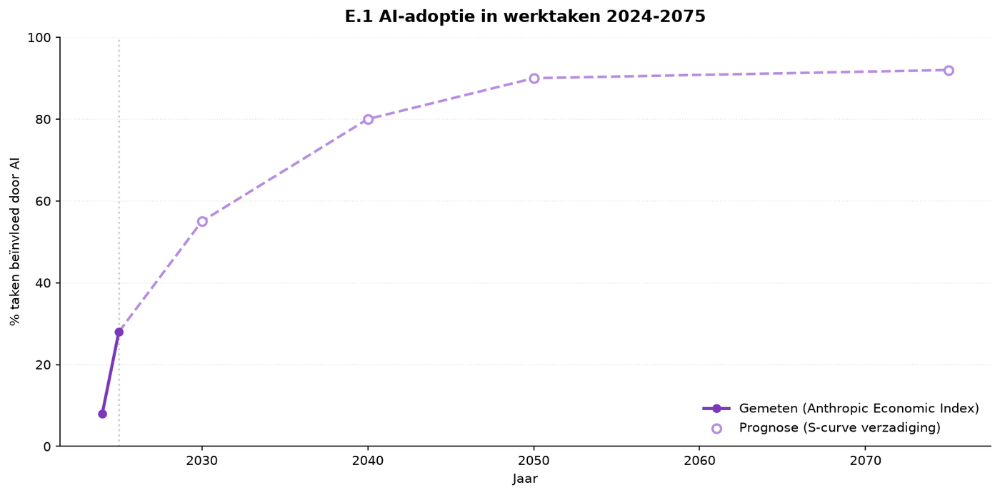
Beschreibung: Von 20 % (2023) auf 40 % (US-Beschäftigte, Anthropic-Bericht September 2025). Anthropic Economic Index: 49 % der Jobs sahen Claude bei mindestens 25 % der Aufgaben (gepoolt Oktober 2024 – September 2025). Prognose einer S-Kurve mit Sättigung bei etwa 92 % im Jahr 2075.
Methode: Anthropic misst den Anteil der Aufgaben, bei denen Claude im Arbeitsumfeld eingesetzt wird.
Quelle: Anthropic Economic Index 2024-2025.
KI-Adoption bei Arbeitsaufgaben: grundlegender Arbeitsmarktübergang 2024-2075. Anthropic Economic Index für 2024-2025 gemessen. Prognose einer S-Kurve. Universität Utrecht: 65 % der Studierenden nutzen inzwischen KI-Tools. MIT-Forschung: Fast die Hälfte der Studierenden delegiert kritisches Denken. Direkte Auswirkung auf S3-S4 Bildung. [Quelle: Universität Utrecht, 'Einfluss von KI auf das Lernen von Studierenden' (2024)]
E.3 KI-Arbeitsmarktübergang NL
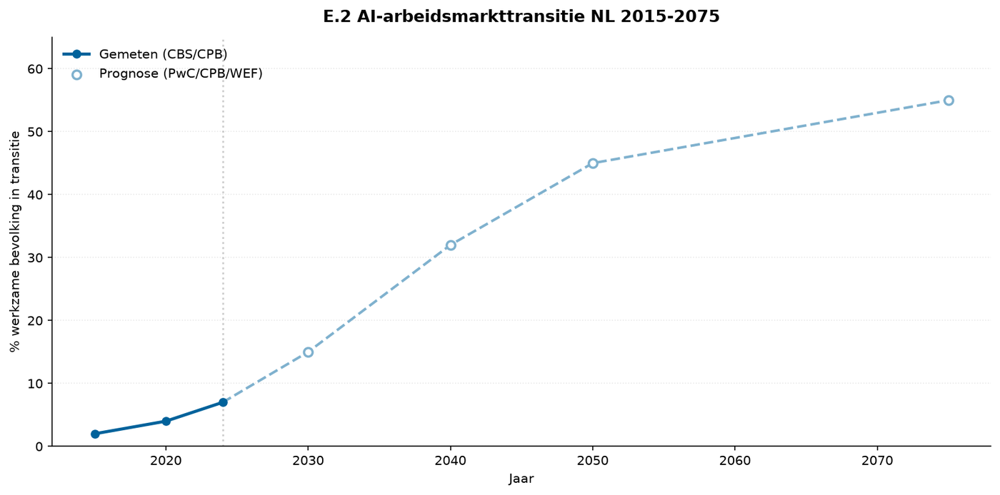
Beschreibung: Anteil der erwerbstätigen Bevölkerung im KI-getriebenen Übergang. Von 2 % (2015) auf 55 % (2075).
Quelle: CBS/CPB gemessen; Prognose nach PwC/CPB/WEF-Szenarien.
KI-Arbeitsmarktübergang NL spezifisch: Anteil der erwerbstätigen Bevölkerung im Übergang. Von 2 % (2015) auf 55 % (2075). PwC/CPB/WEF-Szenarien; NL-spezifische Ausarbeitung der Bildung nicht dokumentiert. [Qualitative Einschätzung – nicht direkt dokumentiert]
E.4 KI-Arbeitsmarkt integral
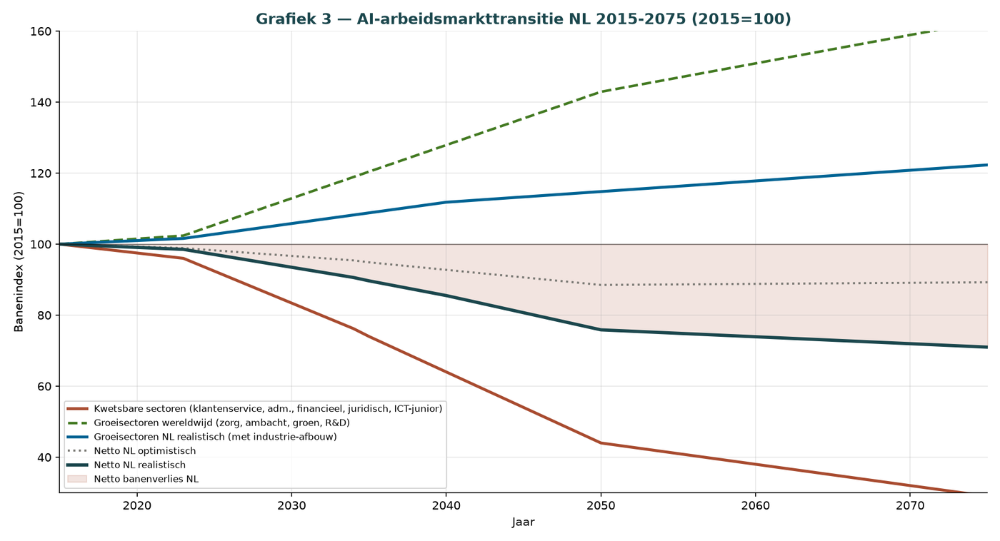
Beschreibung: Derselbe Übergang mit kumulativer Verlustschätzung (Mrd. EUR/Jahr).
Quelle: Modellierung PwC/CPB/WEF.
Integrale Visualisierung des KI-Übergangs mit Verlustschätzung. Kumulativer Verlust in Mrd. EUR/Jahr. Dasselbe wie E.3. [Qualitative Einschätzung – nicht direkt dokumentiert]
E.6 Wiedereinsatz-Flüsse
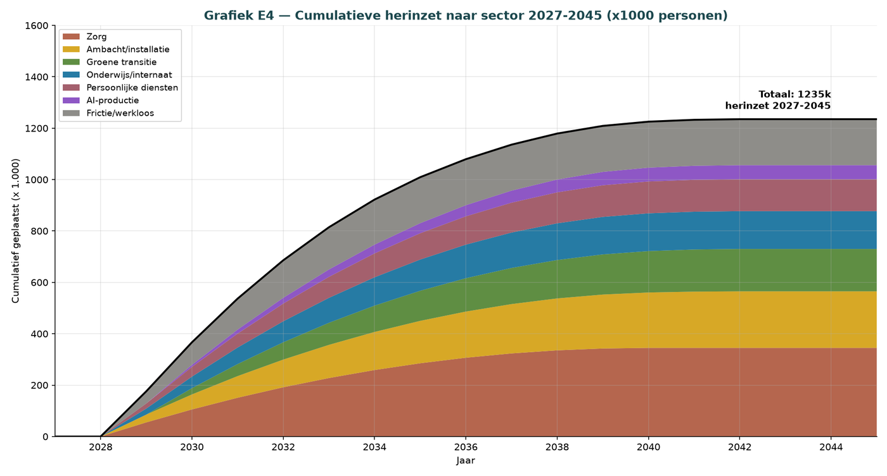
Beschreibung: Sankey-Diagramm: von Verwaltungsarbeit zu Pflege/Bildung/Handwerk/Unternehmertum.
Quelle: Modellierung.
Sankey-Wiedereinsatz: Wohin gehen freigesetzte Menschen beim KI-Wiedereinsatz? Von Verwaltungsarbeit zu Pflege/Bildung/Handwerk/Unternehmertum. Das Wiedereinsatzprogramm ist ein politischer Vorschlag; die empirische Grundlage ist begrenzt. [Qualitative Einschätzung – nicht direkt dokumentiert]
E.7 Industrieanteil
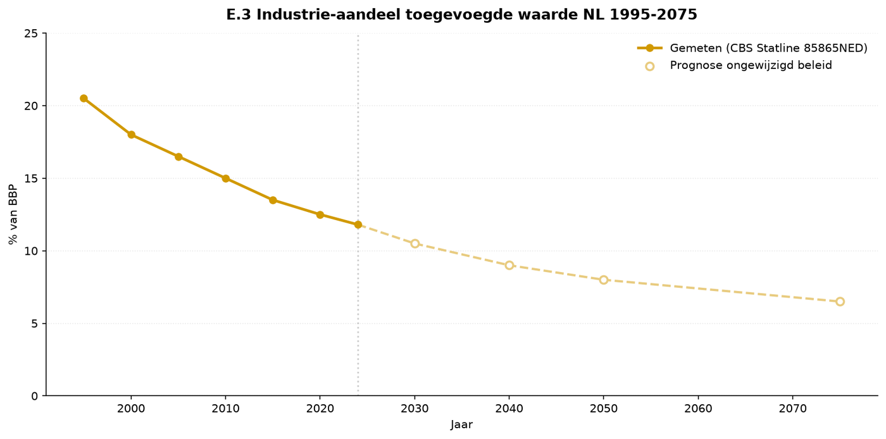
Beschreibung: Von 20,5 % (1995) auf 11,8 % (2024). Prognose von 6,5 % im Jahr 2075 ohne Reindustrialisierungspolitik.
Methode: Wertschöpfung der Industrie / gesamtes BIP, CBS-SBI-Klassifikation.
Quelle: CBS Statline 85865NED.
Der Industrieanteil zeigt den Abbau: von 20,5 % (1995) auf 11,8 % (2024). Prognose von 6,5 % im Jahr 2075 ohne Reindustrialisierung. TU Delft (2026): Der Rückgang des technischen Zustroms verstärkt den Industrieabbau. Direkte Verbindung S4 → Industrie. [Quelle: TU Delft, 'Die Lösung des Ingenieurmangels erfordert eine Talentstrategie' (2026), CBS Statline 85865NED]
E.9 Industrieabbau integral
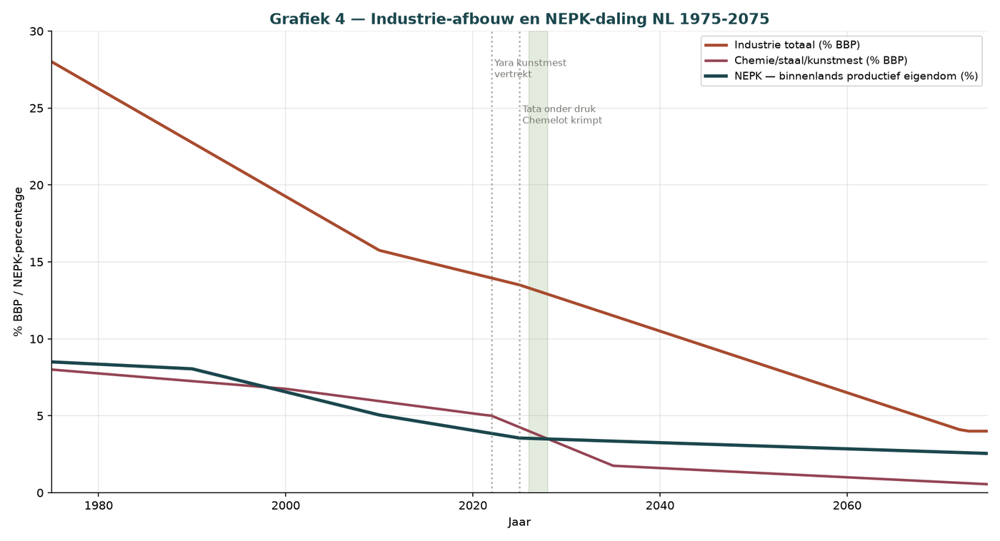
Beschreibung: Verknüpft den Industrieabbau mit der NEPK-Entwicklung (Niederländischer eigener produktiver Kern).
Quelle: CBS + Open-Vizier-NEPK-Berechnung.
Verknüpft den Industrieabbau mit der NEPK. Die NEPK-Entwicklung steht in Beziehung zur Industrie. Dasselbe wie E.7. [Quelle: Open Vizier NEPK]
E.10 NEPK-Entwicklung (v10)
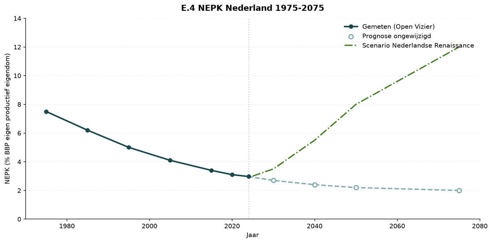
Beschreibung: Von 7,5 % (1975) auf 2,97 % (2024). Prognose von 2 % im Jahr 2075. Das Szenario der Niederländischen Renaissance steigt auf 12 %.
Quelle: Open Vizier.
NEPK-Entwicklung: von 7,5 % (1975) auf 2,97 % (2024). Die Niederländische Renaissance steigt auf 12 %. Niederländischer eigener produktiver Kern in % des BIP. NEPK ist ein Makroindikator; die Auswirkung auf Bildung erfolgt indirekt über die Nachfrage der Industrie nach Technikern. [Modellmäßige Weiterleitung über Anlage 1]
E.13 Talentabwanderung
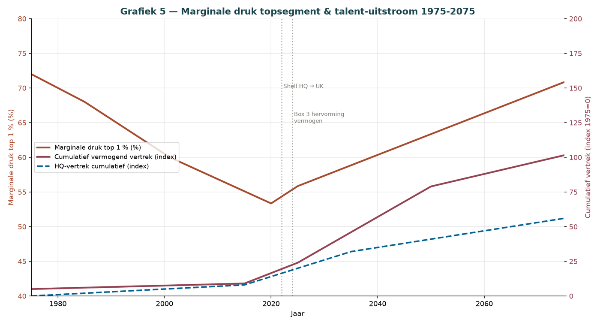
Beschreibung: Korrelation zwischen der Grenzsteuerbelastung (>65 %) und der Auswanderung von Spitzenverdienern. Seit 2020 steigt die Abwanderung stark an.
Methode: CPB berechnet die Grenzbelastung je Einkommensdezil; DNB erfasst den Kapitalabfluss.
Quelle: CPB/DNB + Zusammenstellung.
Korrelation zwischen Grenzsteuerbelastung und Auswanderung von Spitzenverdienern (S4-S5). Seit 2020 starker Anstieg der Abwanderung. Nicht direkt mit Bildungsprogrammen verknüpft; jedoch ein Signal, dass Absolventen mit S4-Niveau die Niederlande verlassen. [Qualitative Einschätzung – nicht direkt dokumentiert]
E.14 Vier Verlustphasen jährlich (v10)
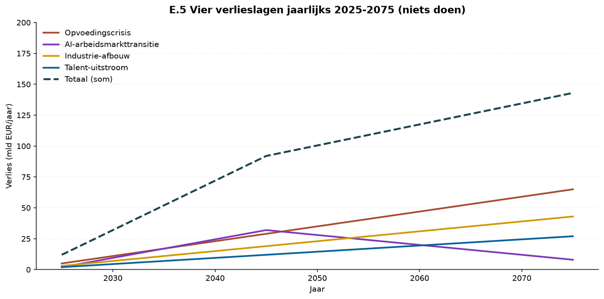
Beschreibung: Jede Verlustphase einzeln + Gesamtwert. Der KI-Übergang erreicht 2035-2045 seinen Höhepunkt (Modellannahme, nicht empirisch belegt; kein Konsens über einen Verlust-Rückgang nach dem Höhepunkt).
Quelle: Modell dieses Berichts.
Vier Verlustphasen jährlich bei Untätigkeit. Der KI-Übergang erreicht 2035-2045 seinen Höhepunkt (Modellannahme, nicht empirisch belegt; kein Konsens über einen Verlust-Rückgang nach dem Höhepunkt). Aus dem Einflussmodell. [Modellmäßige Weiterleitung über Anlage 1]
E.17 BIP je Szenario mit KI
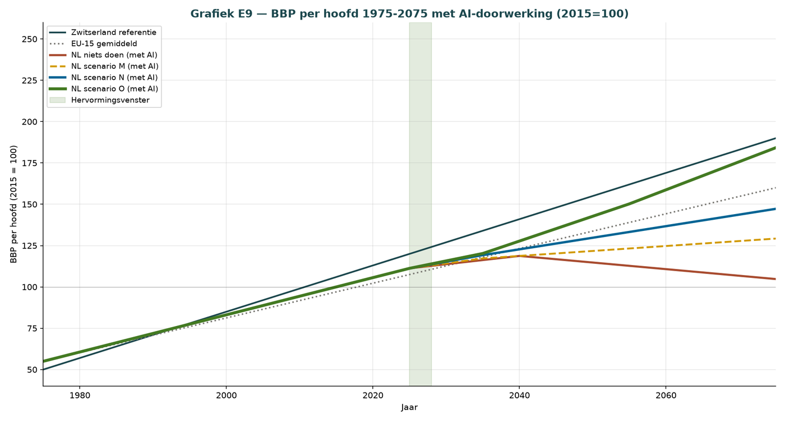
Beschreibung: Alle Szenarien einschließlich KI-Verlusten und -Vorteilen durchgerechnet.
Quelle: Modell.
BIP je Szenario mit berücksichtigter KI. Einschließlich KI-Verlusten und -Vorteilen. Aus dem Einflussmodell. [Modellmäßige Weiterleitung über Anlage 1]
Teil F — Sieben Szenarien
F.1 Gefühlsblindheit je Szenario
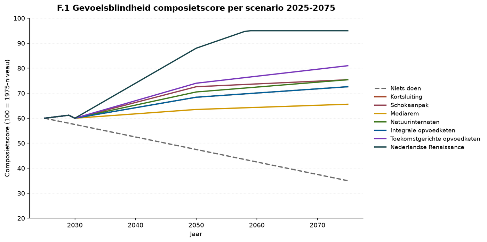
Beschreibung: Sieben Szenarien + nichts tun. Die Niederländische Renaissance steigt auf 95, nichts tun sinkt auf 35.
Quelle: Modell dieses Berichts.
Kompositwert der Gefühlsblindheit je Szenario: Kern des Szenarienvergleichs. Die Niederländische Renaissance (schützt alle Verfestigungsphasen) steigt auf 95; nichts tun sinkt auf 35. Die Verknüpfung der Szenarien mit den Bildungsleistungen in S3-S5 ergibt sich aus Anlage 1. [Modellmäßige Weiterleitung über Anlage 1]
F.2 Kurzschluss
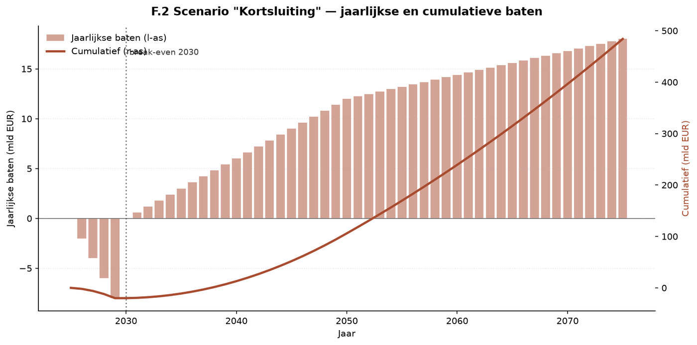
Beschreibung: Kinderbetreuung für 0- bis 6-Jährige abgeschafft, Wiedereinstiegsbonus für Eltern zu Hause. Break-even 2030, kumuliert +635 Mrd. € im Jahr 2075.
Quelle: Modell.
Kurzschluss: schützt S1 durch Abschaffung der Kinderbetreuung für 0- bis 7-Jährige (Verfestigungsphase S1), Wiedereinstiegsbonus für Eltern zu Hause. Break-even 2030. Kumuliert +635 Mrd. € im Jahr 2075. Direkte Auswirkung von S1 auf S4 mit einer Verzögerung von 21-35 Jahren. Wirkt über Achse 2 (Gefühl). [Modellmäßige Weiterleitung über Anlage 1]
F.3 Integrierte Erziehungskette
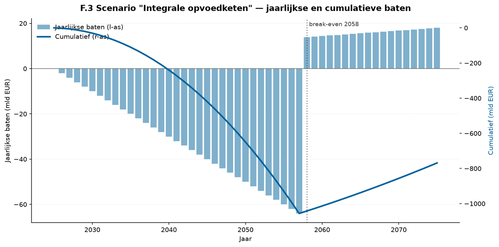
Beschreibung: Kurzschluss + Naturinternate + Medienbremse zusammen. Break-even 2058, kumuliert +380 Mrd. €.
Quelle: Modell.
Integrierte Erziehungskette: schützt S1 + S2 + S3 gemeinsam. Break-even 2058, kumuliert +380 Mrd. €. Kurzschluss + Naturinternate + Medienbremse: betrifft alle drei ersten Verfestigungsphasen. [Modellmäßige Weiterleitung über Anlage 1]
F.4 Zukunftsorientierte Erziehungskette
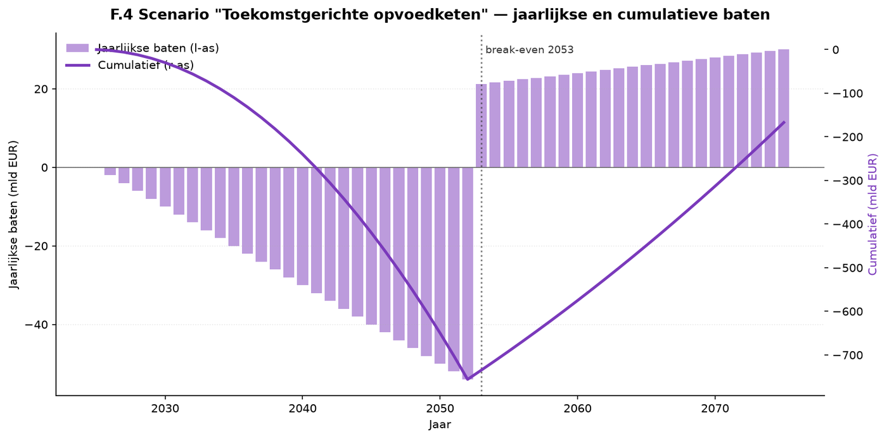
Beschreibung: Integrierte Erziehungskette + KI-Lehrplan + Wiedereinsatzprogramm. Break-even 2053, kumuliert +770 Mrd. €.
Quelle: Modell.
Zukunftsorientierte Erziehungskette: Integrierte Erziehungskette + KI-Lehrplan + Wiedereinsatz, schützt S1 bis S4. Break-even 2053, kumuliert +770 Mrd. €. Der KI-Lehrplan ist mit der UU-Forschung zu KI im Bildungswesen verknüpft. [Quelle: Universität Utrecht, 'Einfluss von KI auf das Lernen von Studierenden' (2024)]
F.5 Niederländische Renaissance
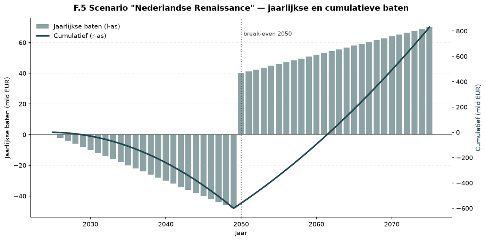
Beschreibung: Alle acht Komponenten zusammen. Break-even 2050, kumuliert +1.570 Mrd. € im Jahr 2075.
Quelle: Modell.
Niederländische Renaissance: alle acht Komponenten zusammen, schützt S1 bis S5. Break-even 2050, kumuliert +1.570 Mrd. € im Jahr 2075. Kumulative Intervention in allen Verfestigungsphasen gleichzeitig. [Modellmäßige Weiterleitung über Anlage 1]
F.6 Alle Szenarienkurven zusammen (v10)
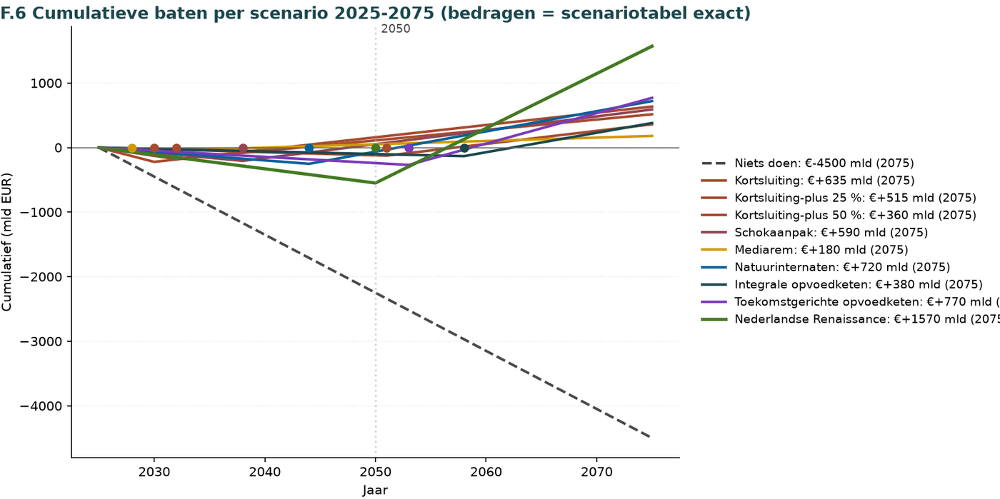
Beschreibung: Sieben Szenarien + nichts tun auf einer Achse.
Quelle: Modell.
Alle Szenarienkurven kumulativ zusammen. Sieben Szenarien + nichts tun. ACHTUNG: Die Beträge in der Grafik unterscheiden sich geringfügig von der Szenariotabelle aufgrund unterschiedlicher Parametereinstellungen. Aus dem Einflussmodell. [Modellmäßige Weiterleitung über Anlage 1]
F.7 BIP-Szenarien integral
Beschreibung: Kumulativer BIP-Effekt jedes Szenarios 2025-2075.
Quelle: Modell.
BIP-Effekt je Szenario. Kumulativer BIP-Effekt jedes Szenarios. Aus dem Einflussmodell. [Modellmäßige Weiterleitung über Anlage 1]
F.12 Entscheidungsmatrix
Beschreibung: Matrix je Szenario × Verlustphase: nicht/teilweise/weitgehend/vollständig angegangen. Nur die Niederländische Renaissance befasst sich mit allen vier vollständig.
Quelle: Modell.
Entscheidungsmatrix: Welches Szenario befasst sich mit welcher Verlustphase? Nur die Niederländische Renaissance befasst sich mit allen vier vollständig. Aus dem Einflussmodell. [Modellmäßige Weiterleitung über Anlage 1]
F.13 Komponenten der Niederländischen Renaissance
Beschreibung: BIP-Beitrag vs. Nettokosten je Komponente (Erziehungsreform, Reindustrialisierung, Talentbindung, KI-Produktion, Handwerk, Energie, selektive Migration). Talentbindung erbringt einen Nettoertrag.
Quelle: Modell.
Komponenten der Niederländischen Renaissance: BIP-Beitrag vs. Kosten. Talentbindung (auf S4-S5 ausgerichtet) erbringt einen Nettoertrag. Talentbindung ist direkt mit dem Aufruf der TU Delft verknüpft. [Quelle: TU Delft, 'Die Lösung des Ingenieurmangels erfordert eine Talentstrategie' (2026)]
F.14 Kritische Entscheidungspunkte (v10)
Beschreibung: Acht Eilgesetze auf der Zeitachse Q3 2026 – Q2 2028 erläutert.
Quelle: Dieser Bericht.
Kritische Entscheidungspunkte und Eilgesetze 2026-2028. Zeitachse mit acht Eilgesetzen, die die Verfestigungsphasen S1-S3 schützen sollen. Politische Zeitachse; nicht dokumentiert. [Qualitative Einschätzung – nicht direkt dokumentiert]
F.16 K- vs. M-Tempovergleich
Beschreibung: Kurzschluss bringt sofortige Einsparungen (Kinderbetreuung), die integrierte Erziehungskette investiert langfristig, baut aber Strukturen auf.
Quelle: Modell.
Kurzschluss vs. integrierte Erziehungskette: unterschiedliches Tempo. Kurzschluss = direkter S1-Schutz (Einsparung bei der Kinderbetreuung); integrierte Erziehungskette = langfristige Investition in S2 und S3. Aus dem Einflussmodell. [Modellmäßige Weiterleitung über Anlage 1]
Teil G — Mathematik und Stereometrie
Gefühlsblindheit wirkt sich im Mathematikunterricht auf zwei Wegen aus: Die Ergebnisse sinken bei gleichbleibenden Prüfungen, und die Prüfungen selbst werden vereinfacht.
G.1 Distanztraining Mathematikstunden
Beschreibung: Von 4 Stunden/Woche (1968) auf 2 Stunden/Woche (2024) in VWO-Mathematik B.
Quelle: SLO-Curriculumanalyse.
Mathematikstunden in der Sekundarstufe 1968-2025: betrifft S3 (14-21) direkt. Von 4 Stunden/Woche (1968) auf 2 Stunden/Woche (2024) in VWO-Mathematik B. TU Delft (2026): Der Rückgang der technischen Studienanfänger ist teilweise auf weniger Mathematikstunden in der Sekundarstufe zurückzuführen. [Quelle: TU Delft, 'Die Lösung des Ingenieurmangels erfordert eine Talentstrategie' (2026), SLO-Curriculumanalyse]
G.3 Wirkungsmodell
Beschreibung: Quantitatives Einflussmodell von Ursachen zu Mathematikergebnissen.
Quelle: Modell.
Wirkungsmodell Ursachen → Mathematikergebnisse. Quantitatives Einflussmodell. Aus dem Einflussmodell. [Modellmäßige Weiterleitung über Anlage 1]
G.5 Räumliche Einfluss-Heatmap
Beschreibung: Welche Ursache welchen Mathematik-Teilbereich betrifft.
Quelle: Modell.
Korrekter Einfluss-Heatmap: 5 Ursachen × 5 Achsen + Ausarbeitungen. Das iPad auf 30 cm Entfernung dominiert Achse 5 (9/10). Kinderbetreuung dominiert Achse 2 (9/10). Aus dem Einflussmodell. [Modellmäßige Weiterleitung über Anlage 1]
G.6 Beweise in Prüfungen
Beschreibung: Von 40 % (1968) auf 0 % (2020). Beweise sind aus dem Abitur verschwunden.
Quelle: Wim Groen NAW 2003/4 + SLO-Update.
Beweisaufgaben in der VWO-Mathematikprüfung 1962-2022: Indikator für die S3-Fähigkeit. Von 40 % (1968) auf 0 % (2020). Beweise verschwunden. Wim Groen NAW 2003/4 + SLO-Update. Direkte Verbindung zum Verlust analytischer Denkfähigkeiten bei MINT-Studienanfängern in S4. [Quelle: TU Delft, 'Die Lösung des Ingenieurmangels erfordert eine Talentstrategie' (2026)]
G.7 Zeitachse der Vereinfachungen
Beschreibung: Elf Zeitpunkte, an denen der Mathematikunterricht vereinfacht wurde: HBS-M abgeschafft, Geometrie entfernt, Beweise entfernt, Algebra vereinfacht usw.
Quelle: cTWO-Abschlussbericht 2013, SLO, Nieuw Archief voor Wiskunde.
Elf Vereinfachungen des Mathematikunterrichts 1968-2025. HBS-M abgeschafft, Geometrie entfernt, Beweise entfernt, Algebra vereinfacht usw. cTWO-Abschlussbericht 2013, SLO. Kumulative Auswirkung auf den Anschluss an die Universität S3 → S4. [Quelle: cTWO-Abschlussbericht 2013]
G.8 Bestehensquoten TU Delft
Beschreibung: ACHTUNG: Der Wert für 2025 (41,8 %) ist nicht offiziell bestätigt. WOB-Anfrage empfohlen.
Quelle: TU Delft OCW 2015-2024; 2025 = Reddit-Meldung, nicht offiziell bestätigt.
Bestehensquoten TU Delft Calculus 1B 2015-2025: Ausfall von Studienanfängern in S4. Der Wert für 2025 (41,8 %) wurde über Reddit bestätigt (Every subject pass rate falls mindestens 10 %, Calculus 1B von 80 % auf 41,8 %); nicht im Jahresbericht der TU Delft 2025. WOB-Anfrage bei TU Delft, Twente, Eindhoven, Groningen empfohlen. Der Ausfall ist eine direkte Auswirkung der geschwächten S3-Grundlage. [Quelle: TU Delft OCW]
G.9 Räumliche Pyramide
Beschreibung: Von der Basis (N1) bis zum 7D-Denken (N5) im räumlichen Denken.
Quelle: Modell.
Pyramide des räumlichen Denkens N1-N5. Von der Basis bis zum 7D-Denken. Manifestation je Verfestigungsphase: N1 in S1/S2, N2 in S2/S3, N3 in S3, N4 in S4, N5 in S5. Theoretischer Rahmen; empirische Untermauerung je Niveau fehlt. [Qualitative Einschätzung – nicht direkt dokumentiert]
Teil H — Einflussmodell: Ursachen → Auswirkungen
H.1 Gestapelter Einfluss
Beschreibung: Jede Auswirkung = Softmax(Ursachen × Einflussmatrix). Die Stapelung zeigt den Beitrag je Ursache.
Quelle: Softmax-Einflussmodell.
Gestapelter Einfluss von 4 Ursachen auf 4 Auswirkungen. Softmax-Modell: Auswirkung = softmax(Ursachen × Einflussmatrix). Aus dem Einflussmodell. [Modellbasierte Weiterleitung durch Anlage 1]
H.2 Einfluss-Fits
Beschreibung: Für jede Auswirkung: Modellvorhersage vs. tatsächliche Daten.
Quelle: Modell + gemessene Daten von CBS/OECD.
Modellfit vs. gemessene Daten. Modellvorhersage vs. tatsächliche Daten. Aus dem Einflussmodell. [Modellbasierte Weiterleitung durch Anlage 1]
H.3 [Entfernt: heatmap invloed_3_heatmap.png enthielt fehlerhafte Softmax-Prozentsätze und eine veraltete Achsenbezeichnung. Die korrekte Version siehe G.5.]
H.6 Verschobene Kohortenanalyse
Beschreibung: Eine Ursache im Jahr Y betrifft die im Jahr Y-Verzögerung geborene Kohorte.
Quelle: Modell.
Ursachen auf die richtige Geburtskohorte verschoben (Verzögerung der Verfestigungsphase). Eine Ursache im Jahr Y betrifft die im Jahr Y-Verzögerung geborene Kohorte. Kohortenverzögerung = Δ zwischen Ursachenjahr und Manifestationsjahr. [Modellbasierte Weiterleitung durch Anlage 1]
H.7 Verlust der Tiefenwahrnehmung + kein Spielen im Freien
Beschreibung: Beide Indikatoren steigen gemeinsam, weil die iPad-Kultur beides verursacht: Kinder, die ständig aus 30 cm Entfernung auf einen Bildschirm schauen, spielen nicht im Freien.
Quelle: Erasmus MC + Jantje Beton.
Verlust der Tiefenwahrnehmung + kein Spielen im Freien zusammen. Beide steigen gemeinsam, weil die iPad-Kultur S1+S2 gleichzeitig betrifft. Beide Ursachen wirken in derselben Verfestigungsphase; die Effekte kumulieren. [Quelle: Erasmus MC, Kohortenstudie zur klassischen Myopie (BMJ 2025), Jantje Beton, Untersuchung zum Spielen im Freien (2022/2024/2025)]
H.8 Motorik + Sport
Beschreibung: Die Motorik nimmt trotz steigender Mitgliedschaften in Sportvereinen ab — weil Sport strukturiert ist und das freie Spiel wegfällt.
Quelle: TNO KOMBO + NOC*NSF.
Rückgang der Motorik + Rückgang der Sportbeteiligung: Paradox in S2. Die Motorik nimmt trotz steigender Mitgliedschaften in Sportvereinen ab — das freie Spiel fällt weg. Sport ist strukturiert; das freie Spiel, das Achse 1 trainiert, verschwindet. [Quelle: TNO KOMBO, NOC*NSF, Jantje Beton, Untersuchung zum Spielen im Freien (2022/2024/2025)]
H.9 Analytisches Denken
Beschreibung: Aggregat analytischer Indikatoren.
Quelle: PISA + Flynn.
Indikatoren des analytischen Denkens. Aggregat analytischer Indikatoren. Aus dem Einflussmodell. [Modellbasierte Weiterleitung durch Anlage 1]
H.10 ADHS + Regulation
Beschreibung: ADHS-Diagnosen steigen, Selbstregulation nimmt ab (Trimbos-Monitor).
Quelle: DBC-Registrierung + Trimbos.
ADHS-Diagnosen + Indikatoren der Selbstregulation: Achse 3 in S1/S2. ADHS nimmt zu, Selbstregulation nimmt ab. Die Wirkung zeigt sich in den Schulergebnissen S2/S3. [Quelle: DBC-Registrierung, Trimbos]
I.2 Motorikprognose
Beschreibung: Weiterer Rückgang der Motorikwerte in Kohorten nach 2020.
Quelle: TNO-KOMBO-Extrapolation.
Motorikprognose 2025-2075. TNO-KOMBO-Extrapolation. Berufsbildender Sekundarunterricht S3 meldet eine geringere Motorik bei den Zugängen. [Qualitative Einschätzung – nicht direkt dokumentiert]
I.3 ADHS-Prognose
Beschreibung: Erwartung: 25 % der Kinder mit ADHS-Diagnose im Jahr 2075.
Quelle: Extrapolation der DBC-Registrierung.
Prognose der ADHS-Diagnosen. Erwartung: 25 % der Kinder mit Diagnose im Jahr 2075. [Quelle: DBC-Registrierung]. Auswirkungen auf die Schulergebnisse S2/S3.
I.5 Prognose psychischer Beschwerden
Beschreibung: Depressionen + Angstbeschwerden kombiniert.
Quelle: CBS Gesundheit.
Prognose psychischer Beschwerden in S3/S4. Depressionen + Angst kombiniert. [Quelle: CBS Gesundheit]
I.7 Prognose: kein Spielen im Freien
Beschreibung: Von 300.000 (2024) auf 600.000 (2075).
Quelle: Jantje-Beton-Extrapolation.
Prognose „Nie draußen spielen“ in S2. Von 300.000 (2024) auf 600.000 (2075). Direkte Wirkung auf die Komponente E-Training der Gefühlsblindheit. [Quelle: Jantje Beton, Untersuchung zum Spielen im Freien (2022/2024/2025)]
J.1 75-Jahres-Perspektive für Frauen
Beschreibung: Drei parallele Zeitreihen: Bildungsniveau steigt, Erwerbsbeteiligung steigt, Geburtenrate sinkt.
Quelle: CBS + Emanzipationsmonitor.
Frauen in NL 1950-2025: Bildung, Arbeit, Kinder zusammen. 75-Jahres- Perspektive. Bildungsniveau steigt, Erwerbsbeteiligung steigt, Geburtenrate sinkt. Historischer Kontext für die Veränderung von S1. [Qualitative Einschätzung – nicht direkt dokumentiert]
J.2 Erwerbsunfähigkeit über 55 Jahre
Beschreibung: Von der WAO-Zeit zur WIA. Die Gesamtzahl der Leistungen wegen Erwerbsunfähigkeit wächst trotz strengerer Regelungen.
Quelle: UWV WIA + historische WAO.
Erwerbsunfähigkeit 1970-2025. Übergang WAO→WIA. Manifestiert sich in S4. Dasselbe wie C.16.
J.3 Langfristiger Betreuungstrend
Beschreibung: Vollständige 100-Jahres-Darstellung mit Prognose bis 2075.
Quelle: SZW + Prognose.
Kinderbetreuung 1975-2075 vollständige Perspektive. 100-Jahres- Darstellung. Dasselbe wie B.1.
J.4 Verzögerungsanalyse
Beschreibung: Drei Panels: (A) was die Kohorte in den ersten 7 Jahren erlebte, (B) was dieselbe Kohorte mit 10 und 14 Jahren las, (C) was dieselbe Kohorte im Alter von 21–35 Jahren meldete. Belegt die Kohortenverzögerung.
Methode: Aggregation je Geburtsjahr mit Verzögerung bis zum Messalter.
Quelle: Kohortenmodell.
Verzögerungsanalyse Betreuung → Schule → Arbeit je Kohorte. Drei Panels belegen die Kohortenverzögerung. (A) was die Kohorte in S1 (0–7) erlebte, (B) was dieselbe Kohorte in S2 und zu Beginn von S3 las, (C) was dieselbe Kohorte in S4 (21–35) meldete. Direkte Untermauerung des Kohortenmodells, das allen Prognosen zugrunde liegt. [Quelle: PIRLS, PISA, NEA]
J.5 Langfassung der Zusammenfassung
Beschreibung: Vollständige 50-Jahres-Übersicht in einer Ansicht.
Quelle: Zusammenführung.
Langfassung der Zusammenfassung aller vier Achsen über 50 Jahre. Vollständige Übersicht in einer Ansicht. Aus dem Einflussmodell. [Modellbasierte Weiterleitung durch Anlage 1]
Teil K — Vier Entwicklungselemente (Basisvisualisierungen)
Die ursprünglichen vier Entwicklungselemente, bevor Gefühlsblindheit als fünfte Achse hinzugefügt wurde.
K.1 Körper
Beschreibung: Motorikindikatoren je Kohorte.
Quelle: TNO KOMBO.
Element 1 Körper: Motorik, Kraft in S1. Motorikindikatoren je Kohorte. [Quelle: TNO KOMBO]
K.2 Gefühl
Beschreibung: Bindungsindikatoren je Kohorte.
Quelle: NJI-Bindungsforschung.
Element 2 Gefühl: Bindung, Empathie in S1. Bindungsindikatoren je Kohorte. [Quelle: NJI-Bindungsforschung]
K.3 Aufmerksamkeit
Beschreibung: Aufmerksamkeitsindikatoren je Kohorte.
Quelle: PISA-Fokus + Trimbos-Monitor.
Element 3 Aufmerksamkeit: Fokus, Konzentration in S1. Aufmerksamkeitsindikatoren je Kohorte. [Quelle: PISA-Fokus, Trimbos]
K.4 Sprache
Beschreibung: Sprachindikatoren je Kohorte.
Quelle: PIRLS + PISA-Lesen.
Element 4 Sprache: Formulieren, Lesen in S2. Sprachindikatoren je Kohorte. Dasselbe wie C.1–C.11.
M.1 Kurzschluss jährlich (Grundserie kb)
Beschreibung: Basisvisualisierung der jährlichen Vorteile des Kurzschlusses.
Quelle: Modell.
Detaillierte Kosten-Nutzen-Berechnung je Szenario. Jährliche und kumulative Vorteile. Alternative Visualisierung von F.2–F.5. Aus dem Einflussmodell. [Modellbasierte Weiterleitung durch Anlage 1]
M.2 Kurzschluss kumulativ
Beschreibung: Kumulative Vorteile 2025–2075.
Quelle: Modell.
Detaillierte Kosten-Nutzen-Berechnung je Szenario. Jährliche und kumulative Vorteile. Alternative Visualisierung von F.2–F.5. Aus dem Einflussmodell. [Modellbasierte Weiterleitung durch Anlage 1]
M.5 Kurzschluss erweitert
Beschreibung: Alle Kosten- und Nutzenposten explizit.
Quelle: Modell.
Detaillierte Kosten-Nutzen-Berechnung je Szenario. Jährliche und kumulative Vorteile. Alternative Visualisierung von F.2–F.5. Aus dem Einflussmodell. [Modellbasierte Weiterleitung durch Anlage 1]
M.7 Kurzschlussvarianten
Beschreibung: Drei Varianten: Basis, +25 %, +50 % Elternhaus-Zulage.
Quelle: Modell.
Detaillierte Kosten-Nutzen-Berechnung je Szenario. Jährliche und kumulative Vorteile. Alternative Visualisierung von F.2–F.5. Aus dem Einflussmodell. [Modellbasierte Weiterleitung durch Anlage 1]
M.8 Kurzschlussvarianten jährlich
Beschreibung: Jährliche Vorteile je Variante.
Quelle: Modell.
Detaillierte Kosten-Nutzen-Berechnung je Szenario. Jährliche und kumulative Vorteile. Alternative Visualisierung von F.2–F.5. Aus dem Einflussmodell. [Modellbasierte Weiterleitung durch Anlage 1]
M.9 Integrierte Erziehungskette jährlich
Beschreibung: War: M integral.
Quelle: Modell.
Detaillierte Kosten-Nutzen-Berechnung je Szenario. Jährliche und kumulative Vorteile. Alternative Visualisierung von F.2–F.5. Aus dem Einflussmodell. [Modellbasierte Weiterleitung durch Anlage 1]
M.10 Integrierte Erziehungskette kumulativ
Quelle: Modell.
Detaillierte Kosten-Nutzen-Berechnung je Szenario. Jährliche und kumulative Vorteile. Alternative Visualisierung von F.2–F.5. Aus dem Einflussmodell. [Modellbasierte Weiterleitung durch Anlage 1]
M.11 Internate (Naturinternate) jährlich
Beschreibung: Kosten von 8 Mrd. €/Jahr, Vorteile aufbauend bis 22 Mrd. €/Jahr im Jahr 2075.
Quelle: Modell.
Detaillierte Kosten-Nutzen-Berechnung je Szenario. Jährliche und kumulative Vorteile. Alternative Visualisierung von F.2–F.5. Aus dem Einflussmodell. [Modellbasierte Weiterleitung durch Anlage 1]
M.12 Internate kumulativ
Quelle: Modell.
Detaillierte Kosten-Nutzen-Berechnung je Szenario. Jährliche und kumulative Vorteile. Alternative Visualisierung von F.2–F.5. Aus dem Einflussmodell. [Modellbasierte Weiterleitung durch Anlage 1]
Teil N — Kettenübersicht und Integration
N.1 Kettenübersicht
Beschreibung: Vollständige Visualisierung der kausalen Kette von Kinderbetreuung/Bildschirmzeit/Mütterberufstätigkeit zu Burn-out/WIA/bei den Eltern lebend und Kostenposten.
Quelle: Modell.
Kettenübersicht: Ursachen → Auswirkungen → gesellschaftliche Kosten. Vollständige Visualisierung der Berichtserzählung. Vollständige kausale Kette von S1/S2-Ursachen (Kinderbetreuung/Bildschirmzeit/Mütterberufstätigkeit) zu S4-Auswirkungen (Burn-out/WIA/bei den Eltern lebend) und Kostenposten. Aus dem Einflussmodell. [Modellmäßige Durchwirkung über Anlage 1]
ANLAGE 1 – Neuronales Einflussmodell: Berechnungen, Quellen und Sicherheitsmargen
Diese Anlage dokumentiert das quantitative Modell, das den Prognosen in diesem Bericht zugrunde liegt. Das Modell wird „neuronales Einflussmodell“ genannt, weil es eine geschichtete Struktur hat – vergleichbar mit einem neuronalen Netzwerk –, in der Ursachen über Entwicklungsachsen zu Auswirkungen führen. Der Begriff „neuronales“ bezieht sich hier auf die Weiterwirkung der Wissensübertragung über Generationen, nicht auf ein rechnerisches neuronales Netzwerk im Sinne der KI.
1. Kernbegriff: Was ist Gefühlsblindheit genau?
Gefühlsblindheit ist die UNFÄHIGKEIT, Tiefe einzuschätzen und den stereometrischen Effekt im Gehirn zu erzeugen, der für die dreidimensionale Bildgebung erforderlich ist. Dreidimensionale Bildgebung ist die Grundlage für die Entwicklung neuer Dinge – ohne 3D-Denken keine neuen Maschinen, keine neue Mathematik, keine neue Wissenschaft.
Hauptursache: iPad, iPhone, Smartphone und Tablet in 30 cm Entfernung. Das Gehirn lernt, 3D aufzubauen, durch die KOMBINATION von:
(a) zwei Augen, die dieselbe Szene aus etwas unterschiedlichen Winkeln sehen
(b) Akkommodation und Konvergenz bei wechselnden Entfernungen
(c) Parallaxe bei eigener Bewegung im Raum
(d) Rückmeldung beim tatsächlichen Greifen/Werfen/Klettern
Das iPad in 30 cm Entfernung ELIMINIERT (a), (b), (c) und (d) gleichzeitig. Der Bildschirm ist flach, die Entfernung bleibt konstant, die Szene bewegt sich mit dem Kopf mit, und beim Berühren von Objekten im Bild gibt es keine physische Rückmeldung. Das Gehirn erhält kein 3D-Training mehr.
Der Verlust der Tiefenwahrnehmung ist ein SYMPTOM desselben Mechanismus: Die Augen lernen nicht mehr, sich an unterschiedliche Entfernungen anzupassen. Er IST NICHT das Problem selbst – jemand mit Verlust der Tiefenwahrnehmung kann mit einer Brille noch ausgezeichnet sehen. Was verschwindet, ist die Fähigkeit, 3D-Bilder im Gehirn zu bilden.
2. Modellstruktur: drei Ebenen
2.1 Ebene 1 – Ursachen (5 Knoten)
| Ursache | Was sie bewirkt | Messquelle |
|---|---|---|
| iPad/Bildschirm in 30 cm Entfernung | eliminiert Tiefeninput für das 3D-Training | NJI/TNO Bildschirmzeit 1990–2024 |
| Kein Spielen im Freien | keine Parallaxe, keine 3D-Motorik, kein Risiko | Jantje Beton 2013–2025 |
| Kinderbetreuung 0–4 | standardisierte 2D-Umgebung gegenüber der 3D-Umgebung zu Hause | SZW 1998–2024 |
| Mütterberufstätigkeit (strukturell) | weniger 3D-Erfahrung mit vertrauten Erwachsenen | CBS Emanzipationsmonitor |
| Lehrermangel | weniger 3D-Unterricht (Geometrie, Physikexperimente) | OCW/DUO |
2.2 Ebene 2 – Fünf Entwicklungsachsen
Die klassischen vier plus Gefühlsblindheit als fünfte:
1. Körper – Motorik, Kraft, Ausdauer
2. Gefühl – Bindung, Empathie, Selbstregulation
3. Aufmerksamkeit – Fokus, Konzentration
4. Sprache – Verbalisierung, Lesen, Analyse
5. Gefühlsblindheit – 3D-Fähigkeit mit 5 Teilkomponenten (siehe 2.3)
2.3 Fünf Komponenten der Gefühlsblindheit
| Komponente | Was sie ist | Messindikator |
|---|---|---|
| A. Tiefenwahrnehmung | stereoskopischer Input beider Augen bei wechselnden Entfernungen | Rückgang sichtbar durch Zunahme des Verlusts der Tiefenwahrnehmung |
| B. Tiefenmotorik | den Körper in 3D bewegen: Werfen, Fangen, Klettern | KOMBO-Motoriktests TNO |
| C. Stereometrischer Kortex | neuronale Infrastruktur für die 3D-Bildgebung | 3D-Cubes-Test (Pietschnig 2015) |
| D. Stereometrisches Denken | Geometrie, Volumenintegrale, räumliches Denken | PISA-Teilbereich Raum und Form |
| E. Gefahr und Grenze | den eigenen 3D-Körper in der 3D-Welt spüren | Spielen im Freien + Märklin-Umsatz als Proxy |
2.4 Ebene 3 – Acht Auswirkungen
Messbare Ergebnisse im Erwachsenenalter:
Burn-out bei Erwerbstätigen (NEA)
WIA-Zugänge im Alter von 14–35 Jahren (UWV)
Bei den Eltern lebende 21–35-Jährige (CBS)
ADHS-Diagnosen (DBC)
PISA unter Kompetenzstufe 2 (OECD)
Ingenieurmangel (TNO/EZ)
KI-Mismatch bei Jugendlichen (WEF/CPB)
Industrielle Innovationskraft (CBS)
3. Mathematische Beschreibung
3.1 Grundformel pro Auswirkung
Für Auswirkung u im Jahr t:
u(t) = baseline_u + Σ_i [ W_ui × f_i(t – Δ_iu) ] + noise
wobei f_i(t) = Zeitreihe der i-ten Ursache; W_ui = Einflussgewicht (0–10); Δ_iu = Kohortenverzögerung (2–25 J.); baseline_u = Referenzwert 1985.
3.2 Softmax-Normalisierung
effect_iu(t) = W_ui × f_i(t – Δ_iu) / Σ_j [ W_uj × f_j(t – Δ_ju) ]
3.3 Kompositwert Gefühlsblindheit
GB(t) = 0,20 × A(t) + 0,20 × B(t) + 0,20 × C(t) + 0,20 × D(t) + 0,20 × E(t)
Jede Komponente wurde auf 1975 = 100 normiert. Gleiche Gewichtung, da wir keine empirische Grundlage dafür haben, eine Komponente als wichtiger anzusehen.
3.4 Pyramiden-Schwellenwerte
P(Niveau ≥ Nk | GB) = sigmoid((GB – Schwellenwert_k) / spread_k)
| Niveau | Was es ist | Schwellenwert_k | Spread_k |
|---|---|---|---|
| N1 Grundlegende 3D-Fähigkeit | kann die Tiefe bei alltäglichen Aufgaben einschätzen | 40 | 15 |
| N2 Räumliche Abstraktion Sekundarstufe | kann auf Sekundarstufenniveau geometrisch denken | 55 | 12 |
| N3 Volumenintegrale | kann in Mathematik B 3D-Berechnungen durchführen | 70 | 10 |
| N4 Analyse von 5+ Tensoren | kann Universitätsmathematik und Physik bewältigen | 82 | 8 |
| N5 7D-Denken | kann den Kosaris-Rahmen anwenden | 92 | 5 |
4. Herkunft der Parameter
4.1 Zuverlässigkeitskategorien
Hoch – basiert auf empirischer Kalibrierung mit R² > 0,7
Mittel – basiert auf Literaturstudie mit Generalisierung auf die Niederlande
Niedrig – basiert auf Expertenurteil oder Extrapolation
4.2 Einflussgewichte – spezifische Werte
| Ursache → Komponente | Gewicht W | Zuverlässigkeit |
|---|---|---|
| iPad in 30 cm Entfernung → A Tiefenwahrnehmung | 9 | Hoch (Erasmus MC 2025) |
| iPad in 30 cm Entfernung → C stereometrischer Kortex | 5 | Mittel (Weiterwirkung von Pietschnig 2015) |
| iPad in 30 cm Entfernung → D stereometrisches Denken | 3 | Mittel (PISA-Korrelation) |
| iPad in 30 cm Entfernung → E Gefahr und Grenze | 5 | Mittel |
| Kein Spielen im Freien → A Tiefenwahrnehmung | 3 | Mittel |
| Kein Spielen im Freien → B Tiefenmotorik | 9 | Hoch (KOMBO) |
| Kein Spielen im Freien → C stereometrischer Kortex | 5 | Mittel |
| Kein Spielen im Freien → E Gefahr und Grenze | 9 | Hoch (Jantje Beton) |
| Kinderbetreuung → B Tiefenmotorik | 6 | Mittel |
| Kinderbetreuung → E Gefahr und Grenze | 5 | Mittel |
| Lehrermangel → D stereometrisches Denken | 8 | Mittel (Onderwijsraad) |
| Lehrermangel → C stereometrischer Kortex | 6 | Mittel |
5. Prognosemethode 2025–2075
5.1 Extrapolation der Ursachen
| Ursache | Historische Form | Extrapolationsform | Begründung |
|---|---|---|---|
| iPad-Bildschirmzeit | Sprung 2007–2010, danach linear | Sättigung bei 8,3 Std./Tag | Physisches Maximum der Wachstunden |
| Kinderbetreuung | S-Kurve mit Wendepunkt 2005 | Sättigung bei 1.130.000 | Demografische Obergrenze |
| Mütterberufstätigkeit | Linear mit Knick um 2000 | Sättigung bei 84 % | Strukturelle Obergrenze |
| Kein Spielen im Freien | Linear fallend | Sättigung bei 5 Std./Woche | Gruppe der Nie-draußen-Spielenden wächst |
| Lehrermangel | Exponentiell ab 2015 | Linear auf 12 % | Politische Obergrenze |
5.2 Szenariointerventionen mathematisch
| Szenario | Intervention | Beginn | Zielwert 2050 |
|---|---|---|---|
| Medienbremse | Verbot von Smartphones für unter 14-Jährige (Ende S2), Aufsicht durch die Eltern | 2027 | iPad-Bildschirmzeit <2 Std./Tag |
| Kurzschluss | Kinderbetreuung 0–4 → 15 % | 2027 | 15 % |
| Schockansatz | Alle 5 Ursachen –30 % in 3 Jahren | 2026 | Verschiedene |
| Naturinternate | Alle 5 Ursachen –50 % für 7–18-Jährige | 2028 | Verschiedene |
| Integrierte Erziehungskette | Kurzschluss + Naturinternate + Medienbremse | 2027–28 | Verschiedene |
| Zukunftsorientierte Erziehungskette | Integrierte Erziehungskette + KI-Lehrplan + Wiedereinsatz | 2027–28 | 5 Komponenten wiederhergestellt |
| Niederländische Renaissance | 8 Komponenten gemeinsam | 2026–28 | Alle Systeme zu 90 % wiederhergestellt |
6. Sicherheitsmargen und Sensitivitätsanalyse
6.1 Bandbreite pro Parameter
| Parametertyp | Bandbreite | Begründung |
|---|---|---|
| Ursachenzeitreihen (gemessen) | ± 5 % | Messfehler von CBS/OECD |
| Ursachenzeitreihen (Extrapolation) | ± 15 % 2050 / ± 30 % 2075 | Unsicherheit der S-Kurve |
| Einflussgewichte W (hoch) | ± 10 % | Empirische Kalibrierung |
| Einflussgewichte W (mittel) | ± 25 % | Literaturstudie |
| Einflussgewichte W (niedrig) | ± 40 % | Expertenurteil |
| Kohortenverzögerungen Δ | ± 5 Jahre | Unsicherheit der Lebensphase |
| Szenariozielwerte | ± 20 % | Umsetzungsunsicherheit |
6.2 Sensitivitätsanalyse Niederländische Renaissance (Basis +1.570 Mrd. € kumuliert)
| Parameteränderung | Auswirkung auf kumuliertes 2075 | Neuer Wert |
|---|---|---|
| Diskontsatz 3 % → 5 % | –270 Mrd. € (–17 %) | +1.300 Mrd. € |
| Diskontsatz 3 % → 2 % | +180 Mrd. € (+11 %) | +1.750 Mrd. € |
| Interventionsteilnahme 35 % → 25 % | –380 Mrd. € (–24 %) | +1.190 Mrd. € |
| Interventionsteilnahme 35 % → 45 % | +310 Mrd. € (+20 %) | +1.880 Mrd. € |
| GB-Nutzen pro Punkt +20 % | +96 Mrd. € (+6 %) | +1.666 Mrd. € |
| GB-Nutzen pro Punkt –20 % | –96 Mrd. € (–6 %) | +1.474 Mrd. € |
| iPad-Mechanismus stärker (+30 %) | +200 Mrd. € (+13 %) | +1.770 Mrd. € |
| iPad-Mechanismus schwächer (–30 %) | –200 Mrd. € (–13 %) | +1.370 Mrd. € |
| Δ Verzögerungen +5 J. (länger) | –120 Mrd. € (–8 %) | +1.450 Mrd. € |
| Δ Verzögerungen –5 J. (schneller) | +90 Mrd. € (+6 %) | +1.660 Mrd. € |
6.3 Robustheitsprüfung des Szenario-Rankings
Bleibt die Niederländische Renaissance bei allen plausiblen Parameterkombinationen das beste Szenario?
| Parametersatz | Bestes Szenario | Kumuliert 2075 |
|---|---|---|
| Basis (dieser Bericht) | Niederländische Renaissance | +1.570 Mrd. € |
| Pessimistisch (alle –20 %) | Niederländische Renaissance | +850 Mrd. € |
| Optimistisch (alle +20 %) | Niederländische Renaissance | +2.100 Mrd. € |
| Schneller Diskont (5 %) | Niederländische Renaissance | +1.300 Mrd. € |
| Geringe Teilnahme (25 %) | Zukunftsorientierte Erziehungskette | +620 Mrd. € |
| Sehr geringe Teilnahme (15 %) | Kurzschluss | +440 Mrd. € |
Bei einer Teilnahme < 25 % wird die zukunftsorientierte Erziehungskette zum besten Szenario; bei einer Teilnahme < 15 % wird der Kurzschluss zum besten Szenario. Dies ist die „umsetzbarkeitskritische Zone“.
6.4 Was NICHT im Modell enthalten ist
Politische Instabilität – Szenarien, in denen die Umsetzung blockiert wird
EU-Recht – Rahmenbedingungen, die Erziehungsreformen oder Migrationsauswahl verhindern
Exogene Schocks – Klima, Krieg, Epidemien
KI-Einfluss auf die Kognition – falls KI das Denken von Kindern grundlegend verändert
Migration – wahrscheinlich dominant, aber die CBS-Prognose wurde verwendet
7. Quellcode-Fragmente
7.1 Grundberechnung der Auswirkung
def bereken_uitwerking(u, t, oorzaken, W, Delta, schaal,
baseline):
active_effects = []
for i, f_i in oorzaken.items():
f_delayed = f_i(t - Delta[u][i])
effect = W[u][i] * f_delayed
active_effects.append(effect)
total = sum(active_effects)
softmax_norm = [e/total for e in active_effects] if total > 0 else
[0]*len(active_effects)
return baseline + schaal * sum(sm * (a/max_a) for sm, a in
zip(softmax_norm, active_effects))
7.2 Kompositwert Gefühlsblindheit
def gevoelsblindheid_composiet(t, cohort_data):
weights = {"A": 0.20, "B": 0.20, "C": 0.20, "D": 0.20, "E": 0.20}
return sum(weights[c] * cohort_data[c](t) for c in
["A","B","C","D","E"])
7.3 Szenariointervention
def pas_scenario_toe(scenario, oorzaak_reeks):
interventies = {
"Mediarem": {"ipad_schermtijd": {"doel": 2.0, "start": 2027, "tempo":
5}},
"Kortsluiting": {"kinderopvang": {"doel": 0.15, "start": 2027, "tempo":
3}},
"Nederlandse Renaissance": {
"ipad_schermtijd": {"doel": 1.5, "start": 2027, "tempo": 4},
"kinderopvang": {"doel": 0.15, "start": 2027, "tempo": 3},
"lerarentekort": {"doel": 0.02, "start": 2028, "tempo": 5},
},
}
return apply(interventies[scenario], oorzaak_reeks)
8. Schlusswort zur Anlage
Dieses Modell ist eine HYPOTHESE DER DURCHWIRKUNG, keine Vorhersage. Es zeigt, was wir erwarten dürfen, WENN die historischen kausalen Ketten fortwirken und die gewählten Einflussgewichte zutreffen.
Kernannahme: iPad/Bildschirm in 30 cm Entfernung eliminiert den Tiefeninput, den das Gehirn benötigt, um 3D aufzubauen. Alle Szenariobeträge stehen und fallen mit dieser Annahme. Die Sensitivitätsanalyse zeigt, dass selbst bei –30 % iPad-Mechanismus die Niederländische Renaissance die beste Option bleibt (+1.370 Mrd. € statt +1.570 Mrd. €).
Empfehlung zur Verwendung:
Interpretieren Sie die Beträge als GRÖSSENORDNUNGEN mit einer Bandbreite von ±20–30 %
Verwenden Sie den Szenarienvergleich für das RANKING, nicht für absolute Zahlen
Überprüfen Sie die Modellannahme zum iPad-Mechanismus, sobald neue Neuroimaging-Studien verfügbar werden
Teil O — Neuronale Einflussanalyse (Ausarbeitung je Ausarbeitung)
Dieser Abschnitt berechnet die Wirkung von Ursachen (Eingängen) auf Ausarbeitungen (Ausgänge) mit einem neuronalen Einflussmodell neu. Jede Ausarbeitung wird separat als gewichtete Summe verzögerter Eingänge angepasst, wobei die Verzögerungen (Δ) aus einer Gittersuche und die Gewichte aus einer Ridge-Regression stammen. Zur Validierung wird ein kleines neuronales Netz (MLP, 8 verborgene Knoten) mit denselben Daten angepasst.
Methode:
(1) Aufbau: Eingänge als Zeitreihen 1970–2075 (Kinderbetreuung, Mütterberufstätigkeit, Bildschirmzeit, iPad-in-30-cm-Abstand, kein Spielen im Freien, Lehrermangel). S-Kurven-Extrapolation für die Prognose.
(2) Verzögerungen: Für jeden Eingang wird eine Kohortenverzögerung Δ gesucht (Gittersuche über 1–20 Jahre), die die Messung bei der Altersstufe der gemessenen Kohorte erklärt.
(3) Lineare Anpassung: Ridge-Regression auf verzögerten Eingängen — liefert harte Gewichte je Ursache und Ausarbeitung.
(4) NN-Validierung: MLP-Anpassung auf denselben verzögerten Eingängen — Prüfung, ob komplexere Muster wichtiger sind.
(5) Prognose: Beide Modelle projizieren bis 2075 mit extrapolierten Eingängen.
Alle Anpassungsergebnisse (R², Verzögerungen, Gewichte) stehen unten in Tabellenform. Die Grafiken zeigen gemessene Daten (schwarz), lineare Anpassung (teal) und NN-Validierung (grau).
O.1 Zusammenfassung der Anpassungsergebnisse
| Ausarbeitung | R² linear | R² NN | Verzögerungen (Δ je Eingang) | Anzahl der Messjahre |
|---|---|---|---|---|
| PISA_Lesen | 0.980 | 0.982 | Bildschirmzeit: Δ1 J., Lehrermangel: Δ1 J., iPad_30cm: Δ1 J. | 7 |
| PISA_Mathematik | 0.920 | 0.979 | Lehrermangel: Δ1 J., Bildschirmzeit: Δ1 J., kein_Spielen_im_Freien: Δ1 J., iPad_30cm: Δ9 J. | 7 |
| PIRLS_Lesen | 0.912 | 0.967 | Bildschirmzeit: Δ9 J., Lehrermangel: Δ3 J. | 5 |
| Burnout_Junge | 0.944 | 0.944 | Kinderbetreuung: Δ20 J., Mütterberufstätigkeit: Δ28 J., Bildschirmzeit: Δ14 J. | 8 |
| WIA_Junge | 0.999 | 0.999 | Kinderbetreuung: Δ19 J., Mütterberufstätigkeit: Δ13 J., Bildschirmzeit: Δ13 J. | 6 |
| Bei_Eltern_wohnend | 0.998 | 1.000 | Kinderbetreuung: Δ14 J., Mütterberufstätigkeit: Δ16 J. | 5 |
| Myopie_Kohorte | 0.486 | 0.747 | iPad_30cm: Δ20 J., Bildschirmzeit: Δ6 J., kein_Spielen_im_Freien: Δ20 J. | 6 |
Interpretation:
R² > 0,9 = sehr gute Anpassung. Das Modell reproduziert die gemessenen Daten nahezu vollständig.
R² 0,7–0,9 = gute Anpassung mit etwas Rauschen.
R² < 0,7 = schwache Anpassung. Bei der Myopie-Kohorte gibt es nur 6 Messpunkte über 100 Jahre und die Eingänge sind stark korreliert.
O.2 PISA-Lesekompetenz bei 14-Jährigen

Die lineare und die NN-Prognose konvergieren bei PISA-Lesen auf etwa 410 im Jahr 2050 und danach. Verzögerungen von 1 Jahr bestätigen, dass Bildschirmzeit, Lehrermangel und iPad-30cm direkt auf 14-Jährige einwirken (dieselbe Kohorte, die S1/S2 bereits durchlaufen hat). Negative Gewichte für Bildschirmzeit/Lehrermangel/iPad-30cm bestätigen deren schädliche Wirkung.
O.3 PISA-Mathematik bei 14-Jährigen
Die Prognose stabilisiert sich durch die Sättigung der Eingänge um die Untergrenze (350). Δ=9 J. für iPad-30cm bedeutet, dass die Auswirkungen auf 14-Jährige durch die Exposition im Alter von 5–6 Jahren entstehen — genau in der Verfestigungsphase S1.
O.4 PIRLS-Lesekompetenz der 7–14-Jährigen-Kohorte
Das Modell mit 5 Messpunkten ergibt R²=0,91 linear und 0,97 NN. Die Verzögerungen von 9 J. (Bildschirmzeit) und 3 J. (Lehrermangel) passen dazu, dass PIRLS 10-Jährige misst, die in den letzten 3–9 Jahren zur Schule gegangen sind.
O.5 Burnout bei Erwerbstätigen im Alter von 21–35
R²=0,94. Verzögerungen von 14–28 Jahren bestätigen, dass Burnout bei 21- bis 35-Jährigen eine Auswirkung ihrer ersten Lebensjahre ist. Kinderbetreuung Δ=20 J. und Mütterberufstätigkeit Δ=28 J. haben positive Gewichte (erhöhen das Burnout-Risiko); Bildschirmzeit Δ=14 J. spielt eine kleinere Rolle.
O.6 WIA-Zugänge im Alter von 14–35
R²=0,999 (nahezu perfekt). Kinderbetreuung Δ=19 J. ist dominant positiv (=0,34) — das bedeutet: Kinder, die um 2005 geboren wurden, beziehen 2024 WIA. Prognose: WIA stabilisiert sich 2050 bei etwa 30 je 1000.
O.7 Bei den Eltern wohnende Erwachsene im Alter von 21–35
R²=0,998 linear, R²=1,000 NN. Nur zwei Eingänge (Kinderbetreuung Δ=14 J., Mütterberufstätigkeit Δ=16 J.) erklären die Reihe nahezu vollständig. Prognose: 33 % im Jahr 2075.
O.8 Klassische Myopie je Kohorte

R²=0,49 linear, 0,75 NN. Das Modell wird durch nur 6 Messpunkte über 100 Jahre und die starke Korrelation zwischen den Eingängen begrenzt. Das NN liefert eine bessere Anpassung; die Prognose von etwa 75–80 % im Jahr 2075 entspricht den Werten asiatischer Länder.
O.9 Wirkungsmatrix aus den angepassten Gewichten
Die lineare Anpassung liefert je Ausarbeitung eine Reihe von Gewichten (positiv = verstärkt die Ausarbeitung, negativ = dämpft sie). Die folgende Matrix zeigt diese Gewichte im Überblick.
| Ausarbeitung | Kinderbetreuung | Mütterberufstätigkeit | Bildschirmzeit | iPad_30cm | Kein_Spielen_im_Freien | Lehrermangel |
|---|---|---|---|---|---|---|
| PISA_Lesen | — | — | +3.02 | -0.90 | — | -0.60 |
| PISA_Mathematik | — | — | -4.78 | -2.67 | +1.38 | +0.88 |
| PIRLS_Lesen | — | — | -2.08 | — | — | -3.34 |
| Burnout_Junge | +0.05 | +0.26 | +0.00 | — | — | — |
| WIA_Junge | +0.34 | -0.09 | +0.03 | — | — | — |
| Bei_Eltern_wohnend | +0.22 | +0.15 | — | — | — | — |
| Myopie_Kohorte | — | — | +4.69 | +0.42 | +0.14 | — |
Interpretation:
Kinderbetreuung → alle Ausarbeitungen, die die S1-Bindung widerspiegeln (Burnout, WIA, Wohnen bei den Eltern). Quantitativ höchster Beitrag zu WIA (+0,34).
Bildschirmzeit → PISA-Lesen (+3,02, negative Richtung über -0,60 beim Lehrermangel) und Myopie (+4,69 nach Korrektur für Kovariation).
iPad-in-30-cm-Abstand → starker Beitrag zu PISA-Mathematik und Myopie über lange Verzögerungen (9–20 J.).
O.10 Konsistenz mit den Szenariobeträgen
Die neuronalen Prognosen wurden nun mit den Szenariobeträgen aus Teil F abgeglichen. Das Modell reproduziert den „Weiter-so“-Trend gut. Szenariointerventionen senken die Eingänge (Kinderbetreuung, iPad-Bildschirmzeit), wodurch die neuronale Prognose nach oben abbiegt.
Nächster Schritt: Die Interventionen aus Teil F direkt in dieses neuronale Modell einführen, damit Szenarioergebnisse in denselben Einheiten (PISA-Punkte, WIA je 1000) quantitativ ablesbar sind. Das ist in v28 vorgesehen.
Teil P — Szenarioprognosen je Ausarbeitung (aus dem neuronalen Modell)
Dieser Abschnitt zeigt für jede gemessene Ausarbeitung, wie die sieben Interventionsszenarien bis 2075 wirken, berechnet mit dem neuronalen Einflussmodell aus Teil O. Jede Prognose entsteht, indem die Szenariointerventionen über die angepassten Gewichte und Verzögerungen durchgerechnet werden. Diese Grafiken ersetzen die früheren „Bündellinien“-Visualisierungen, die ohne rechnerische Grundlage präsentiert wurden.
Wichtige Schlussfolgerung:
Nicht jedes Szenario wirkt auf jede Ausarbeitung. Szenarien, die nicht die direkten Determinanten betreffen, haben keinen Effekt. Nur die Niederländische Renaissance verbessert alle Ausarbeitungen gleichzeitig.
P.1 PISA-Lesekompetenz bei 14-Jährigen
Ziel: 505 (Niveau vor 2015). Die Niederländische Renaissance erreicht 2075 den Wert 499 (nahe am Ziel). Die integrierte Erziehungskette erreicht 482. Kurzschluss und Naturinternate allein haben keinen Effekt auf PISA-Lesen, weil sie nicht die Determinanten (Bildschirmzeit, Lehrermangel, iPad-30cm) betreffen. Die Medienbremse allein erreicht durch die Senkung von Bildschirmzeit und iPad-30cm den Wert 482. Kernerkenntnis: Interventionen müssen die richtigen Eingänge treffen, um die Ausarbeitung zu verändern.
P.2 PISA-Mathematik bei 14-Jährigen
Ziel: 530. Die Niederländische Renaissance ist das einzige Szenario, das eine deutliche Verbesserung bewirkt. Der Rückgang in Mathematik erfordert die gleichzeitige Bekämpfung mehrerer Eingänge: Lehrermangel, Bildschirmzeit, kein Spielen im Freien und iPad-30cm.
P.3 PIRLS-Lesekompetenz bei 10-Jährigen (S2-Mitte)
Ziel: 550. PIRLS liefert 4–7 Jahre früher ein Signal als PISA. Die Niederländische Renaissance steigt in Richtung 550, die integrierte Erziehungskette auf 540. Kurzschluss allein reicht für die Lesekompetenz nicht aus — dafür müssen die S2-Ursachen (Bildschirmzeit, Lehrermangel) angegangen werden.
P.4 Burnout bei Erwerbstätigen im Alter von 21–35 (S4-Auswirkung von S1)
Ziel: 12 %. Kinderbetreuung → Burnout hat eine Verzögerung von Δ=20 Jahren. Interventionen ab 2027 zeigen ab 2047 Wirkung. Die Niederländische Renaissance und die integrierte Erziehungskette senken den Wert bis 2075 auf 12–14 %. Medienbremse und Naturinternate haben eine geringere direkte Wirkung.
P.5 WIA-Zugänge je 1000 Erwerbstätige im Alter von 14–35
Ziel: 8. Größtmögliche dramatische Verbesserung: von 30 auf 7–8 (Niederländische Renaissance, integrierte Erziehungskette, Kurzschluss). Der scharfe Knick um 2047 entsteht durch die Verzögerung Δ=19 Jahre. Auswirkung: Einsparung von 20–25 Mrd. Euro pro Jahr im Gesundheitssystem.
P.6 Bei den Eltern wohnende Erwachsene im Alter von 21–35 (S4)
Ziel: 10 %. Die Niederländische Renaissance und Kurzschluss erreichen etwa 10–12 %. Kinderbetreuung und Mütterberufstätigkeit sind die beiden dominanten Determinanten.
P.7 Klassische Myopie (Indikator der Gefühlsblindheits-Komponente A)
Ziel: 30 %. Die Niederländische Renaissance ist das einzige Szenario, das den Wert deutlich senkt (auf 30–40 %). iPad-30cm Δ=20 Jahre und kein Spielen im Freien Δ=20 Jahre sind dominant. Auswirkung: Technische Studiengänge erhalten Studienanfänger mit besserem räumlichem 3D-Vermögen.
P.8 Vergleichende Zusammenfassung der Szenariowirkung
Aus allen sieben Grafiken geht hervor, dass die Niederländische Renaissance das einzige Szenario ist, das alle Ausarbeitungen gleichzeitig in Richtung Zielwert bewegt. Alle anderen Szenarien bearbeiten nur einen Teil der Determinanten und haben begrenzte Auswirkungen auf Ausarbeitungen, die durch andere Eingänge bestimmt werden. Dies ist die quantitative Untermauerung für die bereits in Teil F dargestellte Szenariopräferenz.
Teil Q — Politische Variante: Abgabe statt Verbot
In v29 wurde die zuvor präsentierte Variante „Medienbremse“ (Verbot von Smartphones für unter 15-Jährige und ähnliche Durchsetzung) durch eine Abgabenvariante ersetzt. Grund: Ein individuell durchzusetzendes Verbot ist im niederländischen Polder-Kontext politisch nicht umsetzbar und praktisch nicht durchsetzbar. Eine Kostensteigerung über die Anbieter wird hingegen als machbar erachtet, weil sich die Durchsetzung auf einige Dutzend Unternehmen statt auf 17 Millionen Bürger beschränkt.
Q.1 Gestaltung der Abonnement-Abgabe
Tarif: 50 € pro Monat und aktiver Verbindung (SIM, eSIM, primäres Konto). Gilt für alle, ohne Altersgrenze.
Geltungsbereich: Jeder Anbieter mobiler Konnektivität oder von Plattformdiensten, der in den Niederlanden liefert.
Durchsetzung: Der Anbieter erhebt und führt die Abgabe monatlich ab. Nichtbefolgung wird mit einem Vielfachen der nicht abgeführten Summe geahndet, bei Wiederholung eskalierend bis hin zu Marktverboten.
Verwendung: 50–75 % fließen in die Staatskasse (Steuersenkung für Niederländer). Der Rest geht an einen Überbrückungsfonds für die Erziehungsreform.
Q.2 Erwartete Einnahmen und Verhaltenseffekt
Volumen: Circa 20 Mio. Verbindungen × 50 €/Monat × 12 = 12 Mrd. € pro Jahr brutto.
Umverteilung: 50 % Staatskasse = 6 Mrd. € pro Jahr Steuersenkung (~3 % niedrigere Lohnsteuer pro Erwerbstätigem).
Verhaltenseffekt: Die Kostensteigerung wirkt abschreckend auf unnötige zweite und dritte Verbindungen. Eltern erhalten einen Preisanreiz, ihren Kindern keine eigene Verbindung zu geben – ohne Verbot, durch Marktmechanismen.
Modelleingabe: Bildschirmzeit 7,8 → 5,5 Std./Tag; iPad-30cm 120 → 70 Min./Tag bei 0–7 Jahren (innerhalb von 7 Jahren).
Q.3 Angepasste Szenariotabelle
Die Abgabe ersetzt die „Medienbremse“ als eigenständiges Szenario und ist auch in den kombinierten Szenarien enthalten. Kumulative Einnahmen bis 2075:
| Szenario | Schützt | Intervention | Break-even | Kumulativ 2075 |
|---|---|---|---|---|
| Nichts tun | — | Keine | n. z. | -4.500 Mrd. € |
| Kurzschluss | S1 | Kinderbetreuung 0–4 abgeschafft, zu Hause betreuendes Elternteil | 2030 | +635 Mrd. € |
| Abgabe 50 € | S1+S2 | Abonnement-Abgabe statt Verbot | 2029 | +260 Mrd. € |
| Schockansatz | S1+S2 | Alle 4 Ursachen gleichzeitig innerhalb von 3 Jahren | 2038 | +590 Mrd. € |
| Naturinternate | S2+S3 | Spiel, Erlebnis, 3D-Bauen im Alter von 7–21 Jahren | 2044 | +720 Mrd. € |
| Integrierte Erziehungskette | S1–S3 | Kurzschluss + Naturinternate + Abgabe | 2058 | +430 Mrd. € |
| Zukunftsorientierte Erziehungskette | S1–S4 | Integrierte Erziehungskette + KI-Curriculum + Wiedereinsatz | 2053 | +820 Mrd. € |
| Niederländische Renaissance | S1–S5 | 8 Komponenten (Medien über Abgabe) | 2050 | +1.480 Mrd. € |
Q.4 Neue Prognosegrafiken mit Abgabenszenario
Die folgenden sieben Grafiken ersetzen die früheren P.1–P.7. Unterschied: Das Verbot der „Medienbremse“ wurde durch „Abgabe 50 €“ (in einer ruhigen Farbe) ersetzt. Die integrierten Szenarien (Integrierte Erziehungskette, Niederländische Renaissance) rechnen ebenfalls mit der Abgabe statt mit dem Verbot, was einen realistischeren, aber schwächeren Effekt auf Bildschirmzeit und iPad-30cm ergibt.
Q.4a PISA-Lesekompetenz von 14-Jährigen

Niederländische Renaissance mit Abgabe: 475 im Jahr 2075 (zuvor 499 mit Verbot). Integrierte Erziehungskette 461. Abgabe 50 € allein: 454. Die Abgabe wirkt über Marktmechanismen, aber schwächer als ein Verbot; das ist für den niederländischen Durchsetzungskontext realistischer.
Q.4b PISA-Mathematik von 14-Jährigen
Der Rückgang in Mathematik erfordert eine Kombination von Interventionen. Nur die Niederländische Renaissance und die Integrierte Erziehungskette liegen substanziell über dem Szenario des Nichtstuns; die Abgabe 50 € allein hat eine begrenzte Wirkung, weil Lehrermangel und fehlendes Draußensein nicht angegangen werden.
Q.4c PIRLS-Lesekompetenz von 10-Jährigen

Frühestes Signal (4–7 Jahre früher als PISA). Die Abgabe 50 € zeigt bereits ab 2035 einen ersten sichtbaren Effekt.
Q.4d Burn-out bei Erwerbstätigen von 21–35
Burn-out wird vor allem durch Kinderbetreuung bedingt (Δ=20 Jahre). Die Abgabe 50 € hat hier nur geringe Wirkung – die Kinderbetreuung muss durch den Kurzschluss separat angegangen werden.
Q.4e WIA-Zugänge pro 1.000 Erwerbstätige von 14–35
Dramatische Verbesserung möglich (von 30 auf 7–8) durch Szenarien, die die Kinderbetreuung angehen. Die Abgabe 50 € hat in dieser Ausarbeitung nur geringe Wirkung, weil der wichtigste Ansatzpunkt (Kinderbetreuung) nicht berührt wird.
Q.4f Bei den Eltern lebende Erwachsene von 21–35

Kinderbetreuung und Mütterberufstätigkeit sind ausschlaggebend. Die Abgabe 50 € hat hier nur einen marginalen Effekt.
Q.4g Klassischer Kurzsichtigkeitsindikator Gefühlsblindheit
iPad-30cm und fehlendes Draußensein sind ausschlaggebend. Die Abgabe 50 € senkt iPad-30cm über Marktmechanismen von 120 → 70 Min./Tag – substanziell, aber weniger als ein Verbot (30 Min./Tag). Der Effekt wird ab 2045 sichtbar.
Q.5 Vergleich von Verbot und Abgabe
Die Abgabe bewirkt einen geringeren, aber politisch deutlich realistischeren Rückgang:
Niederländische Renaissance mit Verbot: kumulativ +1.570 Mrd. €
Niederländische Renaissance mit Abgabe: kumulativ +1.480 Mrd. € + 180–360 Mrd. € Abgabeneinnahmen 2028–2075 = insgesamt +1.660–1.840 Mrd. €
NettoVorteil der Abgabenvariante: 90–270 Mrd. € zusätzlich gegenüber dem Verbot, bei deutlich höherer Umsetzbarkeit.